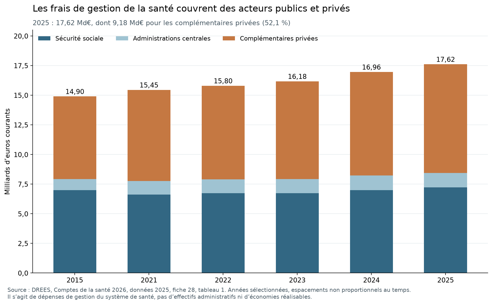

Comparer les fonctions avant de chiffrer les réformes
Lot 2 — Recherche arrêtée au 28 octobre 2026. Ce dossier apporte un premier diagnostic par fonction et des corrections de périmètre chiffrées lorsque les sources le permettent. Il ne clôt ni les ajustements internationaux aux besoins, ni la calibration des économies nationales. Les quatre notes détaillées et leurs données permettent de reprendre chaque calcul.
1. Résultats qui changent le diagnostic
La comparaison globale de l'emploi public ne suffit pas à désigner un excès administratif. Les différences observées changent selon la fonction, le secteur, l'unité et les missions. Plusieurs regroupements usuels — non-enseignants, non-juges, régimes obligatoires, agences — réunissent des activités très différentes. Leur ouverture est une étape empirique, pas une précaution abstraite.
Fiscalité. ISORA déclare pour la France 38 406 ETP fiscaux annuels en 2023 et 93 789 agents de l'organisme en fin d'exercice. Le premier chiffre est un périmètre de ressources consacré à l'impôt ; le second est un stock plus large en personnes. Le quotient des coûts aux recettes se reproduit à 0,67145 %, mais il faut résoudre les conventions monétaires de l'export, et ce ratio dépend aussi des impôts administrés. Les sept fonctions fiscales déclarées séparent service aux usagers, contrôles, recouvrement, contentieux, RH, informatique et autres fonctions. La totalité de l'organisme ne peut être traitée comme un seul métier administratif. Voir note 04a et sources ISORA.
Emploi et chômage. Les dépenses LMP ne permettent pas d'isoler simplement un « coût de placement supprimable ». En France en 2023, 1,712 Md€ sont classés en placement et activités apparentées, et 5,187 Md€ en autres services/non ventilés. Une modalité non ventilée ne signifie pas une activité sans utilité. Les comptes nationaux des organismes allemand et néerlandais montrent aussi que les profils internationaux « staff » ne couvrent pas nécessairement l'organisme entier ni la même unité. L'externalisation doit être comptée dans les coûts et les résultats. Voir note 04a.
École. En 2024, le primaire français compte 17,87 élèves ETP par enseignant ETP, contre 13,71 OCDE ; au second cycle secondaire, 11,48 contre 12,78. Le sens de l'écart varie donc suivant le niveau. Parmi les 320 779 non-enseignants payés par le MEN en novembre 2025, 224 785 travaillent dans la vie scolaire et 52 432 dans la filière administrative. Le personnel non enseignant n'est pas une mesure des seuls supports. Dans TALIS, les enseignants à temps plein du premier cycle secondaire déclarent 1,5 heure hebdomadaire de tâches administratives contre 3,0 OCDE ; ce résultat ne mesure ni tous les métiers ni toutes les formes de complexité. Voir note 04b, DEPP et TALIS France, PDF p.11.
Police et justice. Les 245 983 policiers français de 2022 de la série Eurostat excluent les secrétaires et autres personnels de soutien ; ils ne fournissent donc pas un nombre d'administratifs. La CEPEJ compte 37,3 ETP non-juges pour 100 000 habitants en France, contre 62,8 en Allemagne et une médiane Conseil de l'Europe de 57,9. Les non-juges français comprennent surtout l'assistance judiciaire ; la catégorie administrative représente 3 424 des 25 388 ETP de la réponse Q52. Les délais et la charge d'affaires empêchent de lire un ratio de personnel comme une réserve de suppressions. Voir note 04b, Eurostat et questionnaire CEPEJ France, PDF p.30.
Santé. Le ratio HC7 de 2023 atteint 5,022 % de la dépense de santé en France, contre 4,414 % en Allemagne. Après décomposition par régime, la composante gouvernement/assurance sociale représente 2,448 % contre 3,428 %, et la composante assurances privées 2,574 % contre 0,986 %. Le signe du premier écart ne décrit donc pas, à lui seul, la gestion publique. Cette décomposition par régime ne remplace pas un compte institutionnel S13, ni un ajustement aux prestations et à la qualité. L'administration interne des hôpitaux est en outre hors HC7. Voir note 04c et données OCDE SHA.
Les derniers comptes nationaux DREES portent sur 2025, édition 2026 : 17,616 Md€ de frais de gestion de la santé, dont 9,176 Md€ pour les organismes complémentaires privés, soit 52,09 %. Une baisse de ces frais privés n'est pas automatiquement une économie de budget public. Un transfert de remboursements vers l'assurance maladie modifie simultanément dépenses, financement, taxes et emplois. Les scénarios HCAAM historiques sont conservés avec leurs hypothèses, et non actualisés par une simple multiplication. DREES, fiche 28, tableau 1.

Protection sociale. En ESSPROS, les frais de gestion représentent 3,83 % de la protection sociale en France en 2023, contre 3,60 % en Allemagne, 4,24 % au Danemark et 5,35 % aux Pays-Bas. Cette autre base couvre plusieurs risques et chevauche la santé : elle ne s'ajoute pas à HC7. Les conventions nationales d'imputation empêchent de retenir automatiquement le pays au plus faible ratio comme cible. Voir note 04c et Eurostat.
Territoires et supports. Les données DGCL 2026 confirment 34 875 communes, mais aussi une intercommunalité très largement déployée. Les 7,444 Md€ de coordination valorisée par Ravignon, les 540 M€ hypothétiques sur les supports d'opérateurs, les 412,53 M€ d'économies achats calculées par la DAE et le 1 Md€ annuel projeté pour l'immobilier sont quatre objets différents. Ils ne forment pas un total d'économies nettes. La foncière bénéficie déjà d'un cadre législatif promulgué en août 2026 : sa trajectoire doit entrer dans la référence. Voir note 04d.
2. État des quatre niveaux
| Fonction | 1 — Constat brut documenté | 2 — Périmètre | 3 — Besoins et service | 4 — Potentiel net réalisable |
|---|---|---|---|---|
| Fiscalité | ETP, populations, recettes, dépenses et sept fonctions | ETP fiscaux distincts du stock de l'organisme ; missions nationales documentées | Pas de charge harmonisée ni de résultat fiscal comparable complet | Non identifié ; pas de conversion de l'écart en suppressions |
| Services de l'emploi | Dépenses LMP, profils et comptes d'organismes | Placement, assurance-chômage, autres prestations et externalisation distincts | Usagers, distance à l'emploi, conjoncture et effets causaux non ajustés | Non identifié ; contractualisation à évaluer en coût et emploi durable |
| Éducation | Ratios, dépenses PPA, rémunérations et temps déclaré | Public/privé, niveau CITE, soutien et administration séparés | Besoins éducatifs, dispersion, temps d'enseignement et résultats à apparier | Non identifié ; minutes réellement libérées à mesurer |
| Police | Agents et ratios à année commune | Soutiens exclus ; dates et périmètres nationaux différents | Missions, interventions et sécurité non standardisées | Le jeu ne mesure pas le vivier administratif |
| Justice | ETP, catégories Q52, budgets, affaires et délais | Assistance judiciaire distincte de l'administration | Charge, complexité et organisation judiciaire non neutralisées | Non identifié ; moyens et qualité à analyser conjointement |
| Gestion de santé | HC7, fonctions et unités PPA | Régimes disjoints ; privé obligatoire isolé ; hôpitaux hors HC7 | Panier, contrats, dossier et contrôle non ajustés | Scénarios historiques explicités ; aucun gain APU actuel calibré |
| Protection sociale | ESSPROS, régimes et dénominateurs | HC7 chevauchant ; coûts non imputés selon pays | Droits, risques et qualité non comparables à coût seul | Non identifié ; recouvrement et frais de gestion à distinguer |
| Territoires | Structures, coordination et RH | EPCI déjà présents ; temps nécessaire et sous-totaux séparés | Compétences, densité et accès non appariés | Hypothèses externes, sans potentiel net confirmé |
| Agences, achats, immobilier, SI | Bases support, achats exécutés et objectifs | Budgets d'aide, gains prix, loyers et ventes séparés | Missions et qualité, migrations et investissement à instruire | Hypothèses conditionnelles ; recouvrements et référence à corriger |
Les matrices calculables se trouvent dans 04a_quatre_niveaux.csv, 04b_quatre_niveaux.csv, 04c_ecarts_et_corrections.csv et 04d_quatre_niveaux.csv. Leur structure est propre à la nature du jeu : des lignes de comparaison ne représentent pas autant de fonctions indépendantes. Une cellule vide signifie non identifié, jamais une économie ou un besoin nul.
3. Conséquences pour le catalogue de réformes
Les problèmes documentés ouvrent des pistes : simplification d'une procédure fiscale, évaluation d'un parcours de placement, réduction d'une demande de reporting scolaire, allègement d'un acte policier ou judiciaire précisément identifié, simplification AMO–AMC, outils de recouvrement, clarification d'une responsabilité territoriale, paie partagée, supports communs d'opérateurs, achats au coût complet et optimisation immobilière. Leur effet dépend de leur mise en œuvre ; leur existence ne vaut pas validation d'une réduction d'effectif.
Chaque future fiche doit donner la chaîne suivante, avec preuves ou hypothèses explicites :
- Activité transformée : acte, fréquence, volumes, institutions et métiers concernés ; règles supprimées ou outil modifié.
- Ressources réellement libérables : temps mesuré, couverture, reprises et contrôles maintenus ; distinction entre temps disponible, redéploiement et postes entiers.
- Départs et coût évitable : ETP et cohortes disjoints, départs définitifs par année et métier, coût d'entrée évité, GVT et lectures des pensions déjà définies dans le moteur.
- Coûts et transferts : développement, migration, formation, coexistence, prestataires et tâches reprises par une autre entité, coûts récurrents du service commun.
- Résultat net et qualité : trajectoire annuelle, montée en charge, comparaison à une référence intégrant les réformes engagées, erreurs, délais, accès et effets distributifs.
Les réductions d'un budget d'aide ou d'une prestation, les économies de gestion et les recettes supplémentaires de contrôle seront enregistrées séparément. Une suppression d'institution qui transfère la même mission peut déplacer une dépense. La réduction d'un coût privé n'est pas intégralement une économie d'APU. Une baisse de loyer interne s'annule sous consolidation lorsque les deux entités sont dans le même périmètre.
Le registre de recouvrements devra notamment relier RH–paie–SI, supports d'agences–immobilier–achats, DGFiP–comptabilité locale–coordination, HC7–ESSPROS–AMO/AMC, et temps métier simplifié–automatisation–IA. On attribuera une même heure ou facture à une seule mesure, ou on publiera explicitement l'interaction. Les matrices de ce lot ne sont donc pas additionnées entre elles.
4. Ce qui est vérifié et ce qui reste ouvert
Les scripts de chaque volet reconstruisent les extractions et des contrôles de cohérence ; une seconde lecture menée par un autre auteur relit les cellules et passages primaires. Le détail et les éventuelles réserves sont dans la note de contre-vérification du lot. Les tests portent sur les chiffres et conventions du diagnostic fonctionnel. Ils ne constituent pas encore la contre-expertise des économies et scénarios demandée en phase 5.
Des anomalies de source restent ouvertes, notamment un résidu de deux ETP dans la ventilation CEPEJ française, un million de monnaie nationale dans une identité SHA allemande 2024 et une sous-ligne Santé incohérente dans le tableau Ravignon. Les millésimes DREES et SHA diffèrent aussi. Les valeurs sont conservées avec leurs réserves ; les causes non établies ne sont pas inventées.
La suite de la recherche doit documenter les évaluations de réformes étrangères, les expériences françaises, la simplification, l'IA et les propositions politiques avant la calibration des 25 fiches, du registre des viviers et des quatre scénarios. Il manque encore des coûts marginaux actualisés, des volumes et des départs par processus, ainsi que des résultats comparables à besoins constants. Ce lot resserre les périmètres de travail ; aucun total national d'économies n'en est déduit.
Administration fiscale et services publics de l'emploi
Date de consultation : 28 octobre 2026. Cette note compare des fonctions, des missions et des coûts. Elle sépare systématiquement écart brut, périmètre, besoins et prestations, puis potentiel de réforme. Les trois derniers niveaux ne sont pas remplacés par un zéro lorsqu'ils ne sont pas identifiés.
1. Synthèse
- [FAIT] L'édition récente retrouvée sur le site officiel est Tax Administration 2025, publiée le 17 novembre 2025, portant sur 58 administrations et principalement l'exercice 2023. Le portail ISORA permet aussi de consulter l'exercice 2024. La publication n'est pas un recensement de toutes les administrations fiscales locales de chaque pays.
- [FAIT] La collecte de cette note comprend 3 050 observations ISORA pour 23 pays, années 2022-2024, et 759 observations LMP, années 2023-2024. Les réponses primaires sont archivées sans perte et les observations manquantes restent vides.
- [FAIT] La nomenclature primaire CL_ISORA_TAX version 6.0.6 établit que 337_180 est le total d'ETP fiscaux déclaré ou estimé du formulaire C, Q1, table A.18 ; 83835_28 est le nombre d'agents employés en fin d'exercice du formulaire D, Q1, table A.23. Ce sont deux mesures différentes.
- [FAIT] En France, ISORA publie 38 406 ETP fiscaux en 2023 et 93 789 agents en fin d'exercice. En 2024 : 37 424 ETP et 93 778 agents. On ne peut ni attribuer cet écart au seul temps partiel ni soustraire les deux valeurs pour mesurer les fonctions inutiles. Le raccordement exact des consignes ISORA au total de la DGFiP reste à documenter.
- [FAIT] Selon le questionnaire primaire, un ETP représente une disponibilité à temps plein pendant toute l'année ; une administration ne maîtrisant pas ce concept peut fournir une estimation à partir des effectifs moyens. Il ne s'agit pas exclusivement des agents permanents ou titulaires. Les coûts salariaux comprennent les cotisations aux pensions ; les paiements aux consultants sont exclus de cette composante salariale. Source : questionnaire ISORA, PDF p.6.
- [ESTIMATION] La France a 0,562 ETP fiscal pour 1 000 habitants en 2023, contre 1,328 en Allemagne, 0,438 en Espagne, 0,857 au Royaume-Uni et 1,280 aux Pays-Bas. Ces différences ne sont pas corrigées des missions ni de l'organisation nationale, fédérale ou locale.
- [FAIT] Le coût de collecte publié est de 0,671 % des recettes nettes en France, contre 1,253 % en Allemagne, 0,479 % en Espagne, 0,628 % au Royaume-Uni et 0,707 % aux Pays-Bas, en 2023. Il ne mesure ni le rendement marginal d'un agent ni la qualité du contrôle fiscal.
- [FAIT / ESTIMATION] Le dictionnaire primaire précise que les dépenses dérivées 337_176 sont en milliers de monnaie locale : France 2023 = 4 276 335 milliers, soit 4,276 Md€. L'export de recettes 80040_3 contient 636 876 942 000 avec
SCALE=3. Le coût publié est reproduit par100 × 4 276 335 × 1 000 / 636 876 942 000. Appliquer à nouveau10^SCALEà toutes les observations serait erroné dans cet export. - [FAIT] Les dépenses salariales fiscales françaises sont 2 762 490 milliers d'euros, soit 64,599 % des dépenses de fonctionnement déclarées en 2023. Le coût informatique est une composante du fonctionnement et les dépenses en capital en sont exclues selon le questionnaire : ces postes ne s'additionnent pas tous comme des économies séparées.
- [FAIT] Les sept fonctions fiscales françaises totalisent exactement les 38 406 ETP : usagers/déclarations/paiements 10 356, audit/vérification 10 153, recouvrement forcé 6 302, contentieux 4 933, RH 1 881, informatique 2 536, autres fonctions 2 245. Les 4 % de fonctions de siège se recouvrent avec cette ventilation ; ils ne s'y ajoutent pas.
- [FAIT] La déclaration électronique concerne 96,026 % des déclarations d'impôt sur les sociétés et 86,843 % des déclarations de revenu en France en 2023. La dématérialisation est donc déjà très avancée sur ces actes ; elle ne permet pas de supposer que toute la fonction restante pourrait disparaître.
- [FAIT] Le rapport OCDE avertit explicitement que les taux d'imposition, les assiettes, les missions et les recettes prises en charge rendent les ratios coût/recettes très fragiles pour comparer l'efficience. Source : Tax Administration 2025, encadré 9.2, imprimé p.128-129.
- [FAIT] Les dépenses françaises LMP catégorie 1 sont 6 899 M€ en 2023, soit 0,243 % du PIB selon le ratio publié ; elles comprennent 1 712 M€ de placement/services connexes et 5 187 M€ d'autres coûts ou coûts non ventilés séparément. La rubrique distincte de gestion des prestations est absente, et reste vide.
- [ESTIMATION] Les autres/non ventilés représentent 75,185 % du total français de catégorie 1, calculés sur les montants en euros, plus précis que les pourcentages du PIB déjà arrondis. Cette proportion signale un besoin de ventilation ; elle ne mesure pas un gaspillage de 75 %.
- [FAIT] En 2023, la catégorie 1 représente 0,289 % du PIB en Allemagne, 0,122 % aux Pays-Bas, 0,356 % en Suède, 0,333 % au Danemark et 0,143 % en Australie. Elle ne couvre pas uniquement l'intermédiation et ne peut être convertie en nombre de conseillers.
- [FAIT] Les dépenses françaises de mesures actives des catégories 2-7 sont 15 477 M€ et les aides passives 8-9, 47 968 M€, en 2023. Il s'agit principalement de programmes et de prestations, pas de frais de gestion supprimables. Les stocks de participants correspondants ne sont ni des salariés du SPE ni des nombres annuels de personnes distinctes.
- [FAIT] Les métadonnées de la Commission indiquent une divergence de couverture de la catégorie 1 entre OCDE et base européenne, alors que les données des pays UE et de Norvège proviennent généralement de la même collecte. On ne doit pas utiliser les deux diffuseurs comme deux preuves indépendantes d'un montant identique.
- [FAIT] Le rapport The World of Public Employment Services 2026, OCDE–BID–WAPES, repose notamment sur une enquête 2024. Les profils indiquent 52 593 « staff » pour France Travail, 99 550 pour la BA allemande, 5 555 pour le profil UWV néerlandais, mais aucune valeur pour l'Australie. L'unité et le périmètre de ces « staff » ne sont pas suffisamment explicites pour un classement d'ETP.
- [FAIT] Les comptes nationaux d'organismes montrent des champs différents : UWV emploie 19 612 ETP annuels moyens en 2024, dont 5 207 dans Werkbedrijf. À fin 2024, UWV affiche 22 267 personnes et 19 714 ETP, ainsi que des personnels externes recensés séparément. Le chiffre de 5 555 du profil international ne représente pas un total harmonisé de l'organisme.
- [FAIT] La BA publie 101 300 ETP en décembre 2024, avec assurance-chômage/services, minimum social et caisse d'allocations familiales. Ses données 2025 donnent 102 896,1 ETP au quatrième trimestre. France Travail publie un ordre de grandeur de 55 000 collaborateurs en 2024, qui ne constitue pas une même unité et un même champ.
- [ESTIMATION] Les bases ILO affichées dans le profil français du rapport 2026 donnent 66,546 personnes au chômage ou dans la main-d'œuvre potentielle par « staff », contre 65 publié. Le calcul original ou son millésime ne sont pas entièrement reproduits : ce ratio ne devient pas une charge de portefeuille par conseiller.
- [FAIT] L'expérience randomisée française publiée par Behaghel, Crépon et Gurgand en 2014 ne trouve pas de différence statistiquement significative entre effets d'intention de traiter des deux offres intensives, mais un effet par bénéficiaire plus fort pour l'offre publique. Elle invalide une présomption de supériorité automatique de l'externalisation ; elle ne prouve pas qu'aucun contrat privé ne pourrait fonctionner.
- [FAIT / LIMITE] L'OCDE rapporte que l'administration fiscale canadienne a automatisé plus de 40 processus, avec un gain cumulé déclaré de plus de 187 000 heures. C'est un cas de capacité libérée, pas la preuve de 187 000 heures économisées chaque année ni de postes effectivement supprimés. Source : Tax Administration 2025, encadré 9.6, imprimé p.141.
- [NON TROUVÉ] Cette analyse ne permet pas de chiffrer un sureffectif fiscal français ou un nombre de postes supprimables dans les services de l'emploi. Les 132 comparaisons à quatre niveaux conservent les corrections et potentiels non identifiés sous forme de champs vides, documentés. Six réformes candidates sont opérationnellement définies, avec mesure à 2-3 ans, coûts à établir et absence de gain national préannoncé.
2. Indicateurs comparatifs bruts
Les tableaux suivants présentent une sélection du millésime commun 2023. La base CSV contient les 23 pays et 2024, sans remplacement des absences. Les valeurs en ETP/1 000 habitants sont des [ESTIMATION], calcul 1 000 / indicateur337_010. Les coûts de collecte sont des [FAIT] lus dans l'indicateur 337_012.
| Administration répondante | ETP fiscaux | ETP / 1 000 habitants | Coût de collecte (% recettes) | Source / localisation | Statut et limite |
|---|---|---|---|---|---|
| France | 38 406 | 0,562 | 0,671 | ISORA A.18, D.5, D.6 ; codes337_180/010/012 | Faits et calcul ; champ fiscal, pas tout DGFiP |
| Allemagne | 110 592 | 1,328 | 1,253 | Mêmes tables et codes | Partage des missions et couverture territoriale à vérifier |
| Italie | 29 384 | 0,498 | 0,572 | Mêmes tables et codes | Organismes séparés de recouvrement et de contrôle à prendre en compte |
| Espagne | 21 170 | 0,438 | 0,479 | Mêmes tables et codes | Administration déclarant des fonctions conjointes avec les douanes |
| Portugal | 8 796 | 0,832 | 0,875 | Mêmes tables et codes | Composition des services à harmoniser |
| Belgique | 15 102 | 1,281 | 0,721 | Mêmes tables et codes | Champ fiscal du répondant |
| Pays-Bas | 22 881 | 1,280 | 0,707 | Mêmes tables et codes | Cotisations sociales déclarées parmi les recettes prises en charge en2022 |
| Suisse | 1 018 | 0,115 | 0,457 | Mêmes tables et codes | Répondant fédéral : pas recensement des administrations cantonales |
| Autriche | 8 015 | 0,878 | 0,658 | Mêmes tables et codes | Périmètre du répondant |
| Royaume-Uni | 58 587 | 0,857 | 0,628 | Mêmes tables et codes | Douanes, cotisations et autres missions à distinguer |
| Irlande | 5 168 | 0,974 | 0,397 | Mêmes tables et codes | Structure des bases fiscales et recettes très différente |
| Suède | 9 396 | 0,892 | 0,370 | Mêmes tables et codes | Missions complémentaires et services à harmoniser |
| Danemark | 10 325 | 1,736 | 0,931 | Mêmes tables et codes | Organisation de plusieurs fonctions à vérifier |
| Norvège | 6 886 | 1,248 | 0,316 | Mêmes tables et codes | Effet de l'assiette et des recettes à contrôler |
| Finlande | 5 170 | 0,926 | 0,594 | Mêmes tables et codes | Périmètre et prestations à harmoniser |
| Pologne | 45 762 | 1,247 | 1,273 | Mêmes tables et codes | Périmètre du répondant |
| Estonie | 748 | 0,546 | 0,255 | Mêmes tables et codes | Répondant de petite taille et cadre fiscal différent |
| Canada | 55 168 | 1,376 | 1,101 | Mêmes tables et codes | Missions fiscales et de prestations à ventiler |
| États-Unis | 82 990 | 0,248 | 0,360 | Mêmes tables et codes | IRS fédéral, pas ensemble des administrations des États |
| Australie | 18 103 | 0,679 | 0,722 | Mêmes tables et codes | Missions et exercice fiscal à contrôler |
| Nouvelle-Zélande | 2 878 | 0,551 | 0,414 | Mêmes tables et codes | Missions de prestations et prélèvements à ventiler |
| Japon | 55 969 | 0,449 | 0,884 | Mêmes tables et codes | Périmètre national déclaré |
| Corée | 21 358 | 0,413 | 0,552 | Mêmes tables et codes | Périmètre national déclaré |
Source primaire : ISORA latest v5. Les requêtes de données exactes, les notes et les formules des codes sont dans 04a_isora_observations.csv, 04a_dictionnaire_isora.csv et le registre. Les commentaires de périmètre orientent la vérification ; ils ne valent pas correction numérique achevée.
| Pays | SPE et administration (% PIB) | Placement et services connexes (% PIB) | Gestion des prestations (% PIB) | Autres/non ventilés (% PIB) | Année / source / statut |
|---|---|---|---|---|---|
| France | 0,243 | 0,059 | ND | 0,182 | 2023, OCDE LMP, EXP, [FAIT] |
| Allemagne | 0,289 | 0,151 | 0,075 | 0,063 | 2023, même source, [FAIT] |
| Italie | 0,061 | 0,002 | 0,037 | 0,023 | 2023, même source, [FAIT] |
| Espagne | 0,134 | 0,064 | 0,020 | 0,050 | 2023, même source, [FAIT] |
| Belgique | 0,247 | 0,108 | 0,071 | 0,068 | 2023, même source, [FAIT] |
| Pays-Bas | 0,122 | 0,057 | 0,061 | 0,002 | 2023, même source, [FAIT] |
| Suède | 0,356 | 0,275 | 0,032 | 0,048 | 2023, même source, [FAIT] |
| Danemark | 0,333 | 0,026 | 0,111 | 0,196 | 2023, même source, [FAIT] |
| Finlande | 0,181 | 0,101 | 0,052 | 0,027 | 2023, même source, [FAIT] |
| Canada | 0,112 | 0,024 | 0,039 | 0,048 | 2023, même source, [FAIT] |
| États-Unis | 0,014 | 0,004 | 0,010 | 0,000 | 2023, même source, [FAIT] |
| Australie | 0,143 | 0,067 | 0,050 | 0,025 | 2023, même source, [FAIT] |
Source : OCDE Labour Market Programmes, catégories LMP10/11/12/13, unité PT_B1GQ. Les arrondis et les éventuelles ventilations incomplètes empêchent d'exiger la fermeture exacte de chaque ligne. ND n'est pas zéro. Le taux français ne se décompose pas en ajoutant une valeur implicite inventée pour LMP12.
3. Définition des ressources fiscales et vérification des unités
3.1 Deux périmètres de personnel
La nomenclature actuelle a été relue dans le XML primaire :
- 337_180 est dérivé des réponses 91710_206 et 91710_208 : total fiscal déclaré ou estimation du formulaire C. Les administrations jointes impôts/douanes peuvent estimer la part fiscale et répartir leurs fonctions support partagées.
- 83835_28 correspond au nombre employé en fin d'exercice, formulaire D. L'annotation de la table A.23 autorise les administrations conjointes à fournir leur effectif organisationnel total. Ni la temporalité, ni le champ, ni l'unité ne coïncident nécessairement avec les ETP fiscaux annuels.
- Le formulaire C décrit une ressource annuelle, éventuellement estimée par effectifs moyens. Il n'autorise pas à présenter tous les chiffres comme un décompte exact de permanents.
La France déclare ne pas être une administration jointe impôts/douanes. Cela ne suffit pas à expliquer son écart entre ressources fiscales et stock organisationnel. La DGFiP assure également des missions de gestion publique et d'autres fonctions ; la part exacte expliquant les deux chiffres n'a pas été trouvée dans les documents ISORA consultés. Les 38 406 ETP ne doivent donc pas être utilisés pour remplacer le total DGFiP du chantier français, ni les 93 789 agents pour gonfler artificiellement le comparateur fiscal.
3.2 Le piège de SCALE
Le code primaire CL_UNIT_MULT appelle bien 0 « unités » et 3 « milliers ». Il serait néanmoins incorrect d'appliquer cet exposant indistinctement au contenu numérique du CSV ISORA reçu.
L'annotation Subtitle1 de 337_176 et 337_177 précise que les montants dérivés de la table A.16 sont en milliers de monnaie locale. Le ratio 337_012, table D.6, est défini comme les dépenses opérationnelles divisées par les recettes nettes, multipliées par 100. L'export fournit simultanément le montant 4 276 335, les recettes 636 876 942 000 et le ratio 0,6714538898 pour la France 2023. Le facteur de rapprochement est donc explicitement vérifié, indicateur par indicateur.
Les contrôles livrés reproduisent les identités disponibles sur les 46 pays-années : coût/recettes, population/ETP et somme des sept fonctions. Cette vérification décrit la convention observée de cette réponse d'API ; elle n'est pas une règle universelle sur les API FMI. Les valeurs brutes, SCALE, libellés et annotations restent conservés pour permettre une révision indépendante.
Un coût moyen annuel calculé sur les ETP fiscaux inclurait les contributions aux pensions et divers coûts de fonctionnement. Il n'est ni un coût d'entrée ni une économie marginale. Le contrôle d'unités ne transforme donc pas ce ratio en paramètre du modèle de non-remplacement.
3.3 Fonctions, siège et externalisation
Les sept familles du formulaire C sont disjointes pour la ventilation annuelle, sous réserve de la qualité de déclaration. Le siège constitue une autre lecture des mêmes ressources. Additionner les ETP RH, informatiques et les 4 % de siège créerait un double compte.
Les coûts salariaux excluent les prestataires, mais les dépenses opérationnelles couvrent salaires et autres frais de fonctionnement. Fonctionnement moins salaires n'est pas un montant de conseil externe : il inclut notamment des locaux et équipements. L'informatique est également en partie comprise dans les coûts de fonctionnement et dans les salariés ; ses dépenses ne se rajoutent pas mécaniquement au total.
Les fonctions audit, recouvrement et contentieux produisent des recettes, garantissent la conformité et les droits. Les qualifier d'administratives ne permet pas d'omettre leurs résultats lorsqu'on mesure des gains.
4. Fiscalité : quatre niveaux d'écart
Niveau 1 — Écart brut identifié
En 2023, la différence France–Allemagne est d'environ −0,766 ETP fiscal pour 1 000 habitants, tandis que France–Espagne est +0,125. Le sens même de l'écart dépend donc du pays et de l'indicateur. Le coût de collecte raconte une autre relation, sensible aux recettes. Aucune de ces distances ne définit une cible de convergence imposée.
Niveau 2 — Correction de périmètre partiellement documentée
Les déclarations ISORA distinguent administrations conjointes impôts/douanes et ressources estimées pour la fiscalité. Elles renseignent aussi les responsabilités en cotisations sociales, prestations, prêts étudiants, registres ou évaluations immobilières. Une partie de ces questions est périodique : les réponses 2022 sont conservées comme telles, sans prétendre décrire sans changement 2023 ou 2024.
Par exemple, les Pays-Bas et le Royaume-Uni déclarent en 2022 la collecte de cotisations sociales ; HMRC indique aussi plusieurs missions de prestations et prêts. Les réponses françaises indiquent notamment des missions de pension alimentaire, jeux et évaluation immobilière. La documentation de ces différences est utile ; elle ne donne pas le temps consacré à chacune. Les administrations de niveau fédéral ne constituent pas, à elles seules, le recensement des administrations fiscales infranationales.
Pour une correction complète, il faut ajouter les ressources des organismes séparés et retirer uniquement des activités identifiées, avec leurs ETP et coûts propres. Ces ETP de correction ne sont pas disponibles : l'écart corrigé reste vide.
Niveau 3 — Besoins et prestations non normalisés
L'habitant n'est pas une unité de travail fiscal : entreprises, revenus, transactions, taxes administrées, assiettes, règles, fréquence des déclarations et contrôles requis diffèrent. Un ratio de recettes peut s'améliorer après hausse d'un taux d'imposition sans aucun gain opérationnel ; il peut également se dégrader après un investissement qui améliore le service plus tard.
Il manque un panier de tâches de fiscalité identique, une mesure des heures effectivement consommées, des délais et erreurs, ainsi qu'un contrôle de la conformité et de l'écart fiscal. On ne peut pas tenir pour équivalents des services collectant la même somme avec des régimes et niveaux de conformité différents. La correction de besoins reste non identifiée.
Niveau 4 — Réformes mesurables, quantité de postes non démontrée
Le traitement de dossiers, les informations redemandées et les tâches de support peuvent faire l'objet d'expérimentations. Toutefois, le traitement automatique de déclarations est déjà largement installé. Le cas canadien de RPA documente une expérience déclarée de temps libéré, avec affectation possible aux dossiers plus complexes ; il ne fournit pas les postes réellement retirés, une économie annuelle indépendante et tous les coûts nécessaires à sa transposition.
Les gains seront comptés après mesure du temps net de vérification, des nouveaux coûts techniques, des reprises et des recettes. Le rendement d'un contrôle supplémentaire ne doit pas être confondu avec le coût moyen de collecte de toute l'administration. Les recettes éventuellement perdues doivent être retirées du gain budgétaire.
5. Services de l'emploi : services, prestations et prestataires
5.1 Ce que mesure LMP
LMP classe des interventions publiques. La catégorie 1 réunit services publics de l'emploi et administration ; les catégories 2-7 concernent des mesures actives et les catégories 8-9 principalement des aides et revenus de remplacement. Les stocks STO sont des stocks de participants, pas des recrutements ni des effectifs administratifs. Les participants de la catégorie 1 ne doivent pas être additionnés aux autres catégories ; les participants des aides 8 ne s'ajoutent pas à ceux des mesures 2-7.
Les dépenses publiques peuvent financer des services réalisés par des acteurs externes. La fourniture privée n'est donc pas une économie égale à la disparition d'une paie publique. Il faut mesurer le coût complet pour les administrations, la facturation, l'achat, le contrôle du prestataire et la qualité obtenue. L'OCDE souligne également que la définition de sa catégorie 1 diffère de celle de la collecte européenne : les détails méthodologiques de l'une ne sont pas transférables sans vérification à l'autre.
Le total français 2023 de 6 899 M€ n'est ni le budget complet de toutes les politiques de l'emploi ni le seul coût de rapprochement des offres et demandes. La valeur de placement LMP11 de 1 712 M€ ne peut pas non plus remplacer une autre proposition budgétaire sans aligner missions, financeurs, exercice et conventions comptables. Le résiduel LMP13 de 5 187 M€ peut comprendre des fonctions et coûts qui ne sont pas ventilés séparément : il ne constitue pas une liste de doublons.
5.2 Écart brut et première correction de champ
La catégorie 1 française excède celle des Pays-Bas de 0,121 point de PIB, mais est inférieure de 0,046 point à l'Allemagne en 2023. Ce constat ne tient compte ni de l'intensité d'accompagnement ni du rôle assurantiel des organismes. La forte part française des autres/non ventilés empêche notamment d'assimiler chaque sous-catégorie à une production identique dans tous les pays.
Les sources d'organismes permettent de commencer la correction de périmètre :
- France : le rapport annuel 2024 emploie l'ordre de grandeur 55 000 collaborateurs, alors que le profil international indique 52 593 « staff ». Le rapprochement de l'unité et de la date n'est pas achevé. Le réseau pour l'emploi peut comprendre d'autres acteurs que le seul établissement France Travail.
- Allemagne : la BA publie des ETP à une date donnée. Le total 2024 comprend assurance-chômage/services, minimum social et allocations familiales. Les 6 500 ETP arrondis de la Familienkasse ne peuvent être comparés à des conseillers de placement français. Les tableaux nationaux 2025 confirment l'existence de ces fonctions distinctes.
- Pays-Bas : les comptes 2024 distinguent le total UWV de 19 612 ETP annuels et Werkbedrijf, 5 207 ETP. Les 5 555 « staff » du profil international ne se raccordent pas automatiquement au total UWV. Les comptes donnent aussi des personnels externes et flexibles séparés des salariés. Les fonctions sociales et médicales de l'organisme ne sont pas du placement.
- Australie : le profil porte sur les services du Commonwealth, sans les services des États et territoires ; il ne publie pas d'effectif. Le modèle repose largement sur des prestataires. Une case sans salarié public recensé ne signifie pas une production sans travailleurs ni coût.
Ces éléments établissent que le champ diffère, sans encore chiffrer l'écart une fois corrigé. Remplacer le chiffre néerlandais par un total élargi puis le comparer à une unité française mal identifiée ne constituerait pas une correction complète.
5.3 Charge de travail et résultats
Les ratios du rapport 2026 utilisent les personnes au chômage et la main-d'œuvre potentielle de l'ILO, rapportées à l'ensemble du « staff ». Il ne s'agit pas d'un nombre de dossiers enregistrés par conseiller actif. Le profil australien utilise par ailleurs une donnée de main-d'œuvre potentielle de 2017, ce qui interdit de présenter ses entrées comme un millésime unique.
À partir des nombres affichés pour la France, (2 332,73 + 1 167,1) × 1 000 / 52 593 = 66,546, différent des 65 de la fiche. L'écart ne doit pas être corrigé silencieusement dans la publication ; les deux observations et la limite sont consignées. Les profils servent à documenter l'hétérogénéité, pas à calibrer des suppressions.
La correction de besoins exigerait les effectifs de demandeurs inscrits, leur éloignement de l'emploi, les obligations de traitement et d'indemnisation, la part de fonctions relationnelles et les publics confiés aux prestataires. Il faut aussi des résultats à six et douze mois, des revenus et de l'emploi durable, ajustés à la conjoncture et à la composition des publics. Les sorties des listes et les retours à l'emploi ne suffisent pas à identifier un effet causal du service.
5.4 Ce que montrent les évaluations
L'étude randomisée française publiée en 2014 compare des offres intensives de conseil public et privé avec l'offre habituelle. Elle distingue affectation au programme et participation effective ; leurs différences de taux d'adhésion expliquent pourquoi on ne peut pas citer seulement une comparaison d'effets par bénéficiaire. Les contrats privés ont aussi des incitations et contraintes particulières. Cette expérience justifie une évaluation du dessin du contrat et de la qualité, sans verdict universel pour tous les contrats de 2026.
L'OCDE 2022 documente les conditions des contrats avec paiements selon les résultats : concurrence réelle, prix et besoins des publics, exigences de service, suivi et évaluation. Les risques d'écrémage et de moindre effort sur certains publics doivent être mesurés. Ces coûts de pilotage restent publics même lorsque la production est externalisée.
Le niveau 4 demeure donc une liste de transformations à tester, pas une différence de dépense convertie mécaniquement en économie.
6. Six réformes candidates pour les futurs chiffrages
Les propositions sont détaillées dans 04a_reformes_candidates.csv. Leurs cases de postes supprimables et d'économies sont vides. Leur niveau de confiance porte séparément sur le problème et le gain quantifié.
FISC1 — Dossiers et ressaisies fiscales. Décrire les flux correspondant aux 10 356 ETP d'enregistrement, services et traitement, supprimer des demandes de données déjà disponibles puis tester contrôles de forme et assistance documentaire. Un pilote doit mesurer minutes nettes, vérification, reprises, délais et accès hors ligne. Les coûts de migration et de formation sont requis avant toute généralisation. La capacité gagnée peut améliorer le contrôle ou l'accueil ; elle ne devient une suppression que si une unité d'organisation peut réellement fonctionner avec moins de postes.
FISC2 — Fonctions support fiscales. Les ressources RH et informatiques constituent des bases identifiées, pas des blocs inutiles. La réforme doit standardiser des opérations répétitives et préserver les compétences rares et la sécurité. Le registre de viviers doit éviter le recouvrement avec siège, fusion de structures et IA. Les indicateurs de validation sont coût et délai des actes RH, disponibilité du SI, incidents et temps d'assistance aux métiers. Le gain net exige le chiffrage de la migration et de la maintenance.
FISC3 — Contrôle et recettes. Tester l'assistance documentaire et l'orientation des dossiers dans les fonctions audit, recouvrement et contentieux. Les recettes encaissées, annulations et droits du contribuable constituent des contraintes de service. Des échantillons de contrôle aléatoires évitent de mesurer uniquement la sélection des dossiers les plus rentables. Les heures libérées peuvent être réaffectées ; le gain APU doit intégrer toute variation de recettes.
PES1 — Comptabilité des services. Ventiler les 5 187 M€ LMP13, avec correspondance entre services, ressources internes, prestations et coûts communs. Le succès après deux ans est un rapprochement documenté des coûts et résultats, sans collecte administrative redondante. Le montant ventilé est une amélioration de connaissance, pas une économie. La réduction ne peut porter ensuite que sur des procédures ou doublons prouvés.
PES2 — Contrats évaluables. Comparer, sur publics de difficulté similaire, un contrat privé et une offre publique avec une mesure d'emploi durable et de coût complet. Les paiements doivent intégrer les besoins, la continuité et le contrôle du service, sans récompenser seulement les publics faciles à placer. Les coûts d'achat, d'audit et des systèmes doivent être retranchés. Une externalisation gagnante ne se mesure pas aux seuls effectifs de l'établissement public.
PES3 — Démarches du réseau. Cartographier les pièces et informations demandées aux mêmes usagers par plusieurs organismes, réutiliser les données autorisées et supprimer les démarches sans finalité distincte. Un déploiement par territoires comparables peut mesurer temps de traitement, premier rendez-vous, emploi durable et satisfaction. La protection des données et l'accès hors ligne sont des coûts de conception. Le temps récupéré pour le conseil est une amélioration utile même en l'absence de réduction d'effectifs.
7. Limites, confiance et reproduction
Confiance élevée sur la lecture des codes, chiffres publiés et identités arithmétiques contrôlées. Confiance moyenne sur certains champs déclarés, ressources estimées et périmètres d'organismes. Confiance faible sur un potentiel chiffré de suppression, non démontré à ce stade.
Les principales inconnues sont le raccordement français ETP fiscaux/stock DGFiP, les ressources par mission non fiscale, les charges normalisées et résultats, la ventilation LMP française, le champ et l'unité des profils SPE et les coûts nets des projets. La proportion française de retenue à la source 337_098 passe de 73,04 à 0,72 dans l'export 2023/2024 : elle n'est pas utilisée pour une évolution sans clarification d'unité ou de déclaration.
Une tentative de lecture du classeur ReviewTables ISORA 2024 cité par le questionnaire a renvoyé 403. Il n'a pas été présenté comme lu. Le dictionnaire primaire XML, les observations d'API et le questionnaire ont été accessibles. Le catalogue de documents FMI signale une référence de mapping publiée en octobre 2026 ; son classeur n'a pas été ouvert et n'est pas utilisé comme preuve. Les PDF accessibles ont été lus dans les passages ci-dessous ; le reste de leur contenu n'est pas réputé vérifié.
Reproduction des chiffres à partir des petits instantanés versionnés :
python -I scripts/04a_fiscalite_emploi.py
Acquisition si un instantané d'API est absent : ajouter --download. Les gzip conservent exactement le corps HTTP original ; le manifeste donne l'empreinte de l'archive et celle du corps décompressé. La nomenclature actuelle est archivée, aucune exécution de document téléchargé n'intervient.
Les profils et comptes nationaux se reproduisent par python -I scripts/04a_profils_pes.py, une fois les PDF du cache restaurés avec scripts/fetch.py et les URL du registre. Cette seconde commande contrôle aussi la présence des valeurs dans les tables primaires. Aucun ETP national n'est inféré d'un « staff » non défini.
8. Sources effectivement lues
Le registre sources/registre_04a.csv conserve les URL et empreintes. Les tableaux 04a_isora_observations, 04a_dictionnaire_isora, 04a_controles_isora, 04a_isora_fonctions, 04a_lmp_observations, 04a_lmp_comparaison, 04a_quatre_niveaux, 04a_pes_profils_nationaux et 04a_reformes_candidates permettent de retrouver faits, calculs et cases non identifiées.
- ISORA, flux v5, données 2022-2024 : sélection lue intégralement ; nomenclature CL_ISORA_TAX v6.0.6 relue pour les codes retenus, leurs questions, tables, formules et unités. Réponse compressée et manifeste dans
data/raw/04a/. - Questionnaire ISORA 2025, PDF officiel diffusé par l'OCDE : p.3-7 pour recettes, unités, ETP, dépenses et fonctions ; p.10 pour le stock d'agents. Document.
- Tax Administration 2025, chapitre9, imprimé p.122-132 pour ressources et limites ; p.141-143 pour les expériences de soutien et RPA ; titres et codes des tables annexeA, sans prétendre lire le classeur inaccessible. Rapport.
- OCDE LMP, sélection EXP/STO et unités lue intégralement ; structure primaire utilisée pour construire la clé. Structure.
- Commission européenne, DG EMPL, métadonnées LMP : §3.2-3.4, §6.2 et §19, limites d'agrégation et différence OCDE/catégorie1 ; date de contenu 7 septembre2018, distincte de la date de téléchargement. Métadonnées.
- BID–OCDE–WAPES, 2026, préface, chapitre2 p.67-74, éléments d'externalisation/digitalisation, profils imprimés Australie p.288-289, France p.344-345, Allemagne p.350-351, Pays-Bas p.380-381, annexeC p.443-445. Les valeurs « staff » sont conservées avec leur unité insuffisamment définie. Rapport.
- UWV, comptes 2024, tableau « Gemiddeld aantal fte’s », et page personnel, tableaux des salariés, ETP et externes. Comptes, personnel.
- BA, rapports 2024 et 2025, section « Personal », tableaux de capacité en ETP, avec date de référence et ventilation assurance/minimum social/prestations familiales. 2024, 2025.
- France Travail, rapport annuel2024, PDF p.9 et26 : ordre de grandeur publié des collaborateurs ; ce chiffre n'est pas harmonisé en ETP. Rapport.
- Behaghel, Crépon et Gurgand, 2014, AEJ Applied Economics 6(4), p.142-174 : résumé, protocole, distinction ITT/effet par participant et résultats. Article intégral archivé.
- Langenbucher et Vodopivec, 2022, sections3-5, contractualisation, suivi et incitations. Étude OCDE.
Enseignement, police et justice : écarts observés et corrections encore manquantes
Consultation : 28 octobre 2026. Ce lot exploite les bruts contrôlés du chantier 04 et les extractions DEPP du chantier 02. Il constitue un diagnostic comparatif partiel. Les quatre niveaux sont explicitement distingués : écart brut, restriction/correction du périmètre, correction des besoins et du service, puis potentiel de réforme. Une case vide aux deux derniers niveaux signifie non identifié, jamais zéro emploi ni zéro économie.
1. Synthèse
- [FAIT] Les ratios EAG 2024, tous établissements, sont en France de 17,87 élèves ETP par enseignant ETP au primaire, 14,69 au collège et 11,48 au second cycle secondaire, contre 13,71, 12,84 et 12,78 dans l'agrégat OCDE. Ce sont des ressources enseignantes, pas des effectifs administratifs. Source : CSV OCDE
DF_UOE_NF_PERS_STR, dimensionsISCED11_1/2/3,INST_EDU, 2024 ;04b_education_ratios.csv. - [ESTIMATION] Les écarts France/OCDE de ces ratios sont respectivement +30,36 %, +14,42 % et −10,14 %, selon
100 × (France / référence − 1). Un ratio plus élevé indique moins d'enseignants par élève, sans préjuger de leur emploi du temps. Source et dimensions identiques au point 1 ;04b_ecarts.csv. - [FAIT] En restreignant aux établissements publics, les ratios 2024 deviennent 17,48, 14,22 et 11,33 en France, contre 13,85, 12,84 et 12,85 OCDE. La sélection public/privé change les valeurs ; les ratios et agrégats imbriqués ne s'additionnent pas. Source : même jeu,
INST_EDU_PUB. - [FAIT] Les dépenses 2023 par élève ETP atteignent 12 310 dollars PPA au primaire, 14 699 au collège, 19 527 au second cycle secondaire, contre 13 552, 15 244 et 15 208 OCDE. [ESTIMATION] Les écarts sont −9,16 %, −3,58 %, +28,40 %. Source :
DF_UOE_INDIC_FIN_PERSTUD,USD_PPP_ST,DIR_EXP, tous établissements et financements ;04b_education_depense_eleve.csv. - [ESTIMATION] Les rémunérations non enseignantes représentent en France 27,28 % au primaire, 28,60 % au collège et 26,62 % au second cycle secondaire en 2023 :
100 × CUR_COMPO / CUR_COMP. Ces parts financières incluent soutien aux élèves, santé, entretien et autres fonctions ; elles ne comptent pas des postes administratifs. Source :DF_UOE_FIN_NATURE_STAFF, millions de monnaie nationale courante ; manuel UOE 2026, p. 113. - [FAIT] Parmi les enseignants à temps plein du premier cycle secondaire, TALIS 2024 publie 1,5 h par semaine de tâches administratives en France contre 3,0 h OCDE, sur 38,7 h et 41,0 h de travail total déclaré. L'enquête indique aussi un stress administratif pour 58 % des enseignants français : durée et ressenti mesurent deux choses différentes. Source : note France, p. imprimée 10, PDF 11.
- [FAIT] Les mêmes enseignants à temps plein déclarent 20,1 h d'enseignement, 7,2 h de préparation, 5,3 h de correction en France, contre 22,7, 7,4 et 4,6 h OCDE. Le temps total moins les heures devant élèves ne mesure donc pas l'administration. Source : même note, PDF 11, tables 3.8/3.10.
- [FAIT] Dans TALIS 2024, 91 % des enseignants français déclarent une classe présentant plusieurs formes de diversité contre 77 % OCDE, selon la définition de l'enquête ; 18 % du temps de classe est consacré au maintien de l'ordre contre 15 %. Aucun coefficient d'effectif ajusté aux besoins n'est identifié ici. Source : même note, PDF 12.
- [FAIT] Le 30 novembre 2025, la DEPP compte 747 404 enseignants publics et 141 411 du privé sous contrat, soit 888 815 personnes physiques ; leurs ETP sont 719 542, 129 454 et 848 996. Le corps d'appartenance ne prouve pas la mission exercée à chaque instant. Source : DEPP, chapitre 2, tableau 2.1, reprise contrôlée du chantier 02.
- [FAIT] Les 320 779 non-enseignants rémunérés par le MEN comprennent 224 785 personnes de vie scolaire, dont 138 185 AESH et 63 688 AED ; la filière administrative représente 52 432 personnes. [ESTIMATION] Cela correspond à 70,07 % de vie scolaire et 16,35 % de filière administrative dans les non-enseignants. Ces sous-ensembles ne s'ajoutent pas aux totaux. Source : DEPP, chapitre 3, tableaux 3.1/3.3, novembre 2025 ;
04b_personnels_education_fr.csvet note 02. - [FAIT] Eurostat compte en France 245 983 policiers en 2022, soit 361,25 pour 100 000 habitants, contre 311,06 en Allemagne, 338,29 en Belgique, 379,84 en Espagne et 210,30 en Suède. La France 2023 n'est pas observée dans le brut ; les années plus récentes des voisins ne la remplacent pas. Source : crim_just_job,
OC5412,T,NR/P_HTHAB, 2022. - [FAIT] La définition commune exclut les secrétaires et employés de soutien. Les notes nationales incluent la police locale en France ; l'Allemagne relève des personnes physiques de fonctionnaires hors stagiaires au 30 juin. Un écart France/Allemagne de +16,14 % [ESTIMATION] reste donc brut. Source : métadonnées Eurostat, §3.4, §3.7, §15.1 « Police Officers ».
- [FAIT] Le contexte d'homicides volontaires enregistrés 2022 est de 1,21 infraction pour 100 000 habitants en France, 0,74 en Allemagne, 0,55 en Italie, 0,69 en Espagne. Ce ne sont ni des nombres de victimes ni une charge complète des policiers. Source : API Eurostat crim_off_cat, filtre ICCS0101, réponse conservée ;
04b_police_contexte2022.csv. - [FAIT] Le rapport CEPEJ disponible mobilisé est le cycle 2024 sur données 2022, avec 19 pays/entités du groupe cible extraits, dont trois entités britanniques séparées. Il ne s'agit ni de l'UE ni d'un groupe de pays de richesse identique. Source : CEPEJ, dossier officiel et recueil des profils.
- [FAIT] En 2022 la France déclare 11,3 juges professionnels, 37,3 non-juges et 3,2 procureurs ETP pour 100 000 habitants ; l'Allemagne 24,7, 62,8 et 7,7 ; les médianes Conseil de l'Europe 17,6, 57,9 et 11,2. Les non-juges français sont 35,58 % sous la médiane [ESTIMATION], mais les tâches et l'externalisation diffèrent. Source : profils CEPEJ, PDF 67 et 75 ; notice Q46/Q52/Q55.
- [FAIT] La réponse française Q52 déclare 25 388 ETP non-juges, dont 20 190 d'assistance judiciaire et 3 424 administratifs en 2022. [ESTIMATION] Cela donne 79,53 % d'assistance et 13,49 % d'administration. Les composants publiés totalisent 25 386, soit un résidu non expliqué de 2 ETP, conservé. Source : questionnaire français, PDF 30.
- [FAIT] Le budget exécuté du système judiciaire 2022 est 77,2 € par habitant et 0,20 % du PIB en France, contre 136,1 € et 0,30 % en Allemagne ; médianes Conseil de l'Europe 74,8 € et 0,28 %. Tribunaux, parquet et aide judiciaire sont couverts ; prisons, PJJ et administration ministérielle sont hors agrégat. Source : profils CEPEJ, PDF 66/74 ; notice, PDF 8-13.
- [FAIT] Le délai théorique civil contentieux en première instance est 333 jours en France, 241 en Allemagne, 540 en Italie, 359 en Espagne, médiane 239 en 2022 ; les affaires civiles entrantes sont respectivement 1,98, 1,19, 2,23 et 2,85 pour 100 habitants. Ressources et charge doivent être lues conjointement. Source : profils CEPEJ, fiches 3/4, PDF 68/76/96/164.
2. Indicateurs et quatre niveaux
Les comparaisons chiffrées sont descriptives : même année, même unité, même catégorie sélectionnée ; les exceptions de méthode restent visibles. La sélection d'une fonction plus étroite ne suffit pas à rendre les droits nationaux identiques.
| Indicateur | Valeur | Unité | Année | Champ / définition | Source (URL) | Page/tableau | Statut | Note |
|---|---|---|---|---|---|---|---|---|
| Enseignement, niveau 1 brut | FR 17,87 / DE 15,17 ; +17,79 % | élèves ETP / enseignant ETP | 2024 | Primaire, tous établissements | OCDE ratios | CITE 1, INST_EDU | FAIT / ESTIMATION écart | Plus d'élèves par enseignant en France |
| Enseignement, niveau 2 périmètre | FR 17,48 / DE 15,36 ; +13,83 % | même unité | 2024 | Primaire, public des deux côtés | même source | CITE 1, INST_EDU_PUB | FAIT / ESTIMATION écart | Restriction de secteur, pas correction des besoins |
| Enseignement, niveau 3 besoins/service | non identifié | — | — | Ajustement à élèves, handicap, dispersion, horaires et qualité identiques | TALIS | PDF 11-12 | NON TROUVÉ | Les indicateurs de besoins ne donnent pas un coefficient causal |
| Enseignement, niveau 4 potentiel | non identifié | ETP ou € | — | Gain net à qualité constante | mêmes sources + DEPP | voir ci-dessous | NON TROUVÉ | Pas de conversion de la part non enseignante en emplois |
| Police, niveau 1 brut | FR 361,25 / DE 311,06 ; +16,14 % | policiers / 100 000 hab. | 2022 | Policiers, soutien exclu | Eurostat | OC5412, P_HTHAB | FAIT / ESTIMATION écart | Deux dates nationales différentes |
| Police, niveau 2 périmètre | non identifié | — | — | Même date, missions et professions | Métadonnées | §3.4/15.1 | NON TROUVÉ | Pas de correction inventée pour police locale, stagiaires ou soutien |
| Police, niveau 3 besoins/service | non identifié | — | — | Charge, élucidation, victimations, interventions, couverture | Contexte Eurostat | ICCS0101, 2022 | NON TROUVÉ | Un homicide enregistré n'est pas une unité de travail policier standard |
| Police, niveau 4 potentiel | non identifié | ETP ou € | — | Administration des forces | mêmes sources | §3.4 | NON TROUVÉ | Les données brutes excluent précisément les soutiens |
| Justice, niveau 1 brut | FR 37,3 / DE 62,8 ; −40,61 % | ETP non-juges / 100 000 hab. | 2022 | Q52, cinq catégories | Profils CEPEJ | PDF 67/75 | FAIT / ESTIMATION écart | Ni greffiers seuls, ni administratifs seuls |
| Justice, niveau 2 périmètre | FR 0,45 / DE 0,33 | administratifs ETP / juge ETP | 2022 | Restriction à la catégorie administrative Q52 | CEPEJ analyses | p. 51, fig. 3.12 | FAIT | Dénominateur juges différent ; harmonisation incomplète |
| Justice, niveau 3 besoins/service | non identifié | — | — | Affaires, complexité, délais, accès et droits | Profils | fiches 3/4 | NON TROUVÉ | Comparaisons de charge possibles, pas correction complète d'effectifs |
| Justice, niveau 4 potentiel | non identifié | ETP ou € | — | Gain net à qualité et accès constants | CEPEJ | chapitre Efficacité et qualité | NON TROUVÉ | Délais et faibles moyens empêchent une lecture comme sureffectif |
Fichier calculable : data/international/04b_quatre_niveaux.csv. Formule de tous les écarts : différence = France − comparateur ; écart relatif = 100 × (France / comparateur − 1). Les différences de points de pourcentage sont distinguées des variations relatives.
3. Analyse détaillée
3.1 Enseignement : ressources, soutien et travail des enseignants
Périmètres. Les ratios EAG sont des quotients d'élèves ETP et d'enseignants ETP, dans un niveau CITE et un type d'établissement identiques. Les niveaux « second cycle secondaire total », général et professionnel se recouvrent. Les catégories privé, privé subventionné et privé indépendant sont elles aussi imbriquées. La méthode EAG D2 distingue ces ratios de la taille des classes. La taille de classe dépend aussi des horaires élèves, du service devant élèves, des groupes, remplacements et enseignements spécialisés.
La correction « public seulement » permet une comparaison de secteur plus précise. Elle ne neutralise pas la part d'élèves défavorisés ou à besoins spécifiques dans chaque secteur, ni la délégation de services. L'agrégat OCDE est une moyenne de pays disponibles, dont la composition peut varier selon le secteur ou le niveau : la différence entre ses deux moyennes n'est pas l'effet causal du privé. Le rapprochement bilatéral France/Allemagne du tableau évite ce changement de groupe, tout en conservant les différences institutionnelles.
La France présente simultanément moins de ressources enseignantes par élève au primaire que l'agrégat OCDE et davantage au second cycle secondaire. Les dépenses PPA par élève suivent une autre géographie : écart négatif au primaire, positif au second cycle. [HYPOTHÈSES explicatives à tester] : filières et options, rémunérations et qualifications, temps de service, enseignements professionnels en petits groupes, carte scolaire et accompagnement. Aucune de ces causes n'est chiffrée ici comme explication résiduelle certaine.
Personnel non enseignant. Le manuel UOE inclut, selon les systèmes, accompagnement pédagogique, orientation, santé scolaire, bibliothèques, gestion, maintenance, sécurité, transport et restauration. Les parts de rémunération 2023 ne permettent donc ni une part de personnes ni un compte d'administratifs. Au primaire, la France est à 27,28 %, la Belgique 26,43 %, la Suède 21,29 %, l'Espagne 13,62 % ; cela justifie d'ouvrir les catégories, pas de retrancher les écarts en emplois. Les composants allemands et danois sont manquants dans le brut : le script ne crée pas de part nulle. Pour la Nouvelle-Zélande au second cycle, la somme des composants diffère du total de 345,85 millions de monnaie nationale ; le contrôle le conserve et signale cette incohérence de déclaration/périmètre non résolue.
Les données françaises DEPP réduisent une confusion concrète : la majorité des non-enseignants du champ MEN travaille dans la vie scolaire. Les AESH et AED sont déjà inclus dans l'assistance éducative, elle-même incluse dans la vie scolaire. Les directeurs, inspecteurs, infirmiers et personnels administratifs ne forment pas une catégorie fonctionnelle unique. Les ETP au 30 novembre sont distincts des personnes physiques et des ETP moyens annuels. Les agents territoriaux d'entretien et de restauration, par exemple, ne sont pas tous payés par le MEN : la table DEPP ne décrit pas tout le personnel utilisé par l'école.
TALIS. Le CSV hérité donne 37,23 h de travail total et 18,96 h d'enseignement en France pour l'ensemble des enseignants, temps partiel inclus. Ces chiffres ne contredisent pas 38,7 et 20,1 h parmi les seuls temps pleins de la note pays : ce sont deux populations. Les erreurs standard disponibles du premier ensemble sont conservées, sans les réutiliser pour le second. La différence entre travail total et enseignement comprend préparation, correction et soutien ; elle n'est pas de l'administration. Les heures déclarées par tâche ne constituent pas une partition comptable exacte, et ne doivent pas être annualisées arbitrairement.
Réforme candidate étayée, effet non chiffré. Stabiliser les prescriptions et tester la suppression ou simplification d'une demande administrative identifiée localement est cohérent avec le stress lié aux changements déclaré dans TALIS. Il faut mesurer les minutes effectivement économisées, le déplacement éventuel vers AESH/AED/directions, les délais d'accompagnement et les erreurs. Le faible volume administratif déclaré relativement à l'OCDE empêche de supposer une grande réserve nationale de postes enseignants libérables par ce seul levier. Suivre aussi heures de cours assurées, accompagnement du handicap, climat de classe, apprentissages et inégalités ; une baisse comptable ne suffit pas.
3.2 Police : une série opérationnelle n'est pas une série de soutien
La police française est au-dessus de l'Allemagne ou de la Suède dans le ratio brut, en dessous de l'Espagne et du Portugal (452,78/100 000 en 2022). La série regroupe les professions correspondant à la définition Eurostat-UNODC, et ne décrit pas l'administration totale du ministère de l'Intérieur. Elle ne peut servir à mesurer le « nombre d'administratifs par policier ».
Les notes nationales documentent des écarts réels : personnels opérationnels fédéraux et locaux hors civils en Belgique ; Forensic Science Ireland inclus en Irlande ; changement de comptage suisse depuis 2022, limité aux personnels autorisés à la coercition ; date allemande au 30 juin. La France exclut les territoires ultramarins énumérés au §3.7. Le taux de chaque pays doit rester celui calculé par Eurostat, sans lui substituer la population CEPEJ d'une autre référence.
Le taux d'homicides enregistrés complète la densité policière mais ne permet pas d'expliquer un nombre de policiers : les écarts de plainte et d'enregistrement, les missions de maintien de l'ordre, frontières, route, enquêtes, terrorisme, tourisme, superficie et couverture rurale restent à traiter. Même les données les plus graves ne constituent qu'une fraction du travail. Un nombre élevé de crimes enregistrés peut refléter l'enregistrement de plaintes auparavant invisibles ; l'utiliser seul comme mesure d'inefficacité peut récompenser le sous-enregistrement.
Réforme candidate conditionnelle. Mesurer séparément les tâches procédurales des agents opérationnels et les soutiens, puis tester un allègement précisément identifié ; le jeu international ne démontre pas à lui seul la présence de doubles saisies ou l'efficacité d'une automatisation. Le choix du pilote requiert donc un diagnostic national supplémentaire. Les indicateurs de qualité nécessaires sont temps d'intervention, présence de terrain, charge d'enquête, élucidation à définitions constantes, victimations et accès au dépôt de plainte. Aucun nombre d'ETP ni économie nette n'est identifié au niveau 4.
3.3 Justice : équipes, affaires et accès géographique
La CEPEJ demande des ETP effectivement occupés ; les chiffres Eurostat de juges ne sont pas substitués : ses propres notes nationales indiquent notamment des juges exclusivement pénaux dans certains pays et l'inclusion de non-professionnels en Italie. La base CEPEJ est plus adaptée au rapprochement avec les budgets et affaires, sous réserve de ses commentaires nationaux.
Le personnel non-juge comprend assistance judiciaire, Rechtspfleger, administration, technique et autres. En France, 2,63 assistants judiciaires par juge contre 0,45 administratif par juge ne décrivent pas la même fonction. L'Allemagne compte 0,40 Rechtspfleger par juge, la France « non applicable ». L'Espagne place presque tout son personnel non-juge dans « autres » ; Finlande, Norvège et Pays-Bas ne fournissent pas toute la décomposition. Un classement des seuls intitulés « administratif » serait donc fragile. La fonction administrative inclut des tâches indispensables d'enregistrement et de gestion des dossiers, pas seulement une direction centrale.
Le ratio français de 0,6 non-procureur ETP/100 000 habitants ne doit pas être lu comme une mesure universellement comparable du greffe du parquet : la réponse nationale Q60 décrit 375 ETP de juristes assistants et assistants spécialisés, hors délégués du procureur (PDF 35). La répartition des greffes entre siège et parquet reste à expertiser ; elle n'est pas corrigée par un multiplicateur inventé. Le faible nombre de procureurs, les juges non professionnels et les délégations de décision modifient aussi les ratios « soutien par magistrat ».
En 2022, les affaires civiles entrantes par habitant sont 66,39 % plus nombreuses en France qu'en Allemagne [ESTIMATION], mais leur complexité et la répartition du contentieux ne sont pas pondérées. Le disposition time vaut stock en fin d'année / affaires résolues × 365 : 333 contre 241 jours au civil de première instance, soit +38,17 % [ESTIMATION]. Ce n'est pas une durée moyenne de traitement des dossiers clos, ni le temps administratif à automatiser. Les délais français sont plus courts qu'en Italie et en Espagne sur cette série ; une seule référence ne suffit pas à désigner une organisation optimale.
Le budget CEPEJ français est proche de la médiane en euros courants par habitant (+3,21 % [ESTIMATION]) mais sous la médiane en proportion du PIB (−0,08 point). Ces deux dénominateurs répondent à des questions distinctes. La comparaison aux pays de revenus proches est plus instructive qu'une médiane paneuropéenne, mais requiert encore prix des ressources, frais de justice, aide judiciaire et externalisation. Le budget ne mesure pas seulement la masse salariale. À titre de contrôle de périmètre, la réponse nationale déclare 5,253 Md€ pour tribunaux + parquet + aide judiciaire, contre 11,148 Md€ pour l'ensemble du système de justice en 2022 : prisons et autres fonctions expliquent notamment cet écart, qui n'est pas une incohérence.
La France a 1,15 site judiciaire/100 000 habitants contre 1,27 en Allemagne et une médiane 1,58 ; ce sont des implantations géographiques, pas des entités juridiques ni le temps d'accès des justiciables. Le maintien de l'accès rural ou ultramarin peut demander davantage de sites à population identique. Les trois entités britanniques restent séparées ; aucune valeur britannique globale n'est fabriquée. Le Canada n'est pas couvert, et aucune moyenne UE/OCDE CEPEJ n'est substituée à la médiane CoE.
Réforme candidate étayée, effet non chiffré. Le rapport CEPEJ souligne le rôle des équipes d'assistance autour du juge (p. 50-52) ; préserver leur capacité tout en testant un traitement plus fluide des dossiers et une meilleure répartition des tâches est une piste mieux étayée qu'une coupe mécanique des non-juges. Les exemples d'outils numériques dans les profils sont des projets, sans preuve ici d'un gain net national. Un pilote doit mesurer temps net, stocks, délais par type et complexité, erreurs de dossier, annulations, droits des parties, satisfaction et distance d'accès. Ni le délai théorique ni l'indice de déploiement informatique ne donne un potentiel certain d'économies.
4. Limites, contradictions et recherches restantes
- Comparabilité des emplois administratifs [NON TROUVÉ]. Aucun tableau international d'effectifs administratifs strictement homogènes n'a été obtenu pour les trois fonctions. Les non-enseignants EAG sont des dépenses ; les policiers excluent les soutiens ; les non-juges incluent l'assistance judiciaire. Les nombres ne sont pas interchangeables.
- Correction des besoins [NON TROUVÉ]. Les taux par élève ou habitant n'ajustent pas complètement les besoins. Les indicateurs TALIS, affaires CEPEJ et homicides Eurostat servent de contexte et de contraintes de qualité, sans établir un besoin normatif en ETP.
- Potentiel de réduction [NON TROUVÉ]. Les trois niveaux 4 restent non chiffrés. Il manque des mesures de tâches, pilotes avec groupe de comparaison, coûts de mise en œuvre et effets sur le service. Les écarts internationaux ne constituent pas des économies.
- Fraîcheur et versions. Les URL exactes de téléchargement des CSV hérités ne sont pas connues. Le registre signale leur URL canonique reconstruite ; la lecture locale est intégrale, leur actualité API n'est pas entièrement certifiée. EAG ratios 2024, finances 2023, TALIS 2024, DEPP novembre 2025 et CEPEJ/police 2022 ne forment pas un millésime commun global.
- Dernier cycle CEPEJ. Le portail officiel indique le dernier rapport du 16 octobre 2024 ; la notice du cycle 2026, introduction annonce une publication en décembre 2026 sur données 2025. Le dossier collecté reste donc 2022. L'accès terminal au portail a reçu 403 ; le texte a été lu avec l'outil web.
- Différences de publication. La note EAG 2026 compare parfois France 2023/24 et moyenne OCDE 2024/25 (qualification, rotation). Ces nombres ne sont pas intégrés aux calculs de même année. Les ratios de cette note ne sont pas des ETP administratifs.
- Incohérences conservées. Q52 France : total moins somme des composants = 2 ETP. Rémunérations Nouvelle-Zélande : résidu signalé. Les affaires entrantes d'Irlande du Nord ne sont pas extraites : le graphique n'a donné que 15 valeurs pour 18 cellules ; elles sont marquées
non_extrait_graphique_incompletplutôt que décalées arbitrairement. Les cellules NA/NAP ne deviennent jamais zéro. - Sources indépendantes. DEPP et EAG ne constituent pas deux validations indépendantes d'un même chiffre : sources françaises, champs, dates et définitions diffèrent. Les fiches et questionnaires CEPEJ ne sont pas des observations indépendantes, mais permettent de comprendre la déclaration nationale. Les rapprochements doivent être interprétés ainsi.
5. Sources, fichiers et reproduction
Registre : sources/registre_04b.csv, avec URL, date de consultation, accès et SHA-256 court. Les manifestes .meta.json conservent empreintes complètes, requêtes exactes, statuts HTTP et méthode de conversion. Les pages HTML OCDE bloquées (403) restent des preuves d'échec ; leurs PDF primaires ont été téléchargés et lus. Une première requête d'homicide avec le mauvais code IC0101 a retourné HTTP 200 sans observation : elle est conservée mais rejetée ; la requête utilisée contient ICCS0101.
Principales sources lues :
- OCDE EAG : CSV hérités
DF_UOE_NF_PERS_STR,DF_UOE_FIN_NATURE_STAFFetDF_UOE_INDIC_FIN_PERSTUD, lus intégralement ; note France 2026, 11 pages, notamment ressources et définitions, publiée le 29 septembre 2026 ; chapitre D2, méthode lue avec l'outil web, téléchargement HTML bloqué ; manuel UOE 2026, définitions de personnel et compensation, p. 113. - OCDE TALIS : CSV hérité et note France 2024 publiée en octobre 2025, 15 pages, notamment PDF 11-13. Les moyennes de la note sont arrondies. Les tâches à temps plein ne sont pas imputées aux pays manquants du brut.
- DEPP : chapitres 2/3 du Panorama 2025-2026, observations au 30 novembre 2025, déjà téléchargés et localisés dans les fichiers du chantier 02.
- Eurostat :
crim_just_jobhérité ;crim_off_catrequête 2022 conservée ; métadonnées, dernière mise à jour affichée 29 avril 2026, §3.4/3.7/4/15.1 et notes nationales. - CEPEJ : analyses 2024, p. 11 (ETP), 50-52 (catégories et assistance), chapitres budget et efficacité ; profils 2024, fiches ciblées 1/4 à 4/4 ; réponse France, PDF 2-7, 30 et 35 ; notice explicative, PDF 8-13 et 31/34-35. Les deux gros recueils sont en cache ; leurs pages ont été sélectionnées explicitement par le script.
Reproduction depuis la racine (Python avec pypdf, autres dépendances communes dans requirements-recherche.txt) :
python -I scripts/02_metiers.py --download
python -I scripts/04b_education_securite_justice.py --download
La seconde commande restaure les PDF/JSON nécessaires absents, puis régénère les CSV, contrôles et registre. Sans --download, l'absence d'un PDF de cache provoque une erreur explicite avec la commande de restauration. Les cinq CSV hérités de data/raw/04/ sont des entrées : leurs anciennes requêtes ne sont pas recréées sous une fausse identité.
Sorties : 04b_education_ratios.csv, 04b_education_remunerations.csv, 04b_education_depense_eleve.csv, 04b_personnels_education_fr.csv, 04b_talis2024.csv, 04b_police2022.csv, 04b_police_contexte2022.csv, 04b_justice2022.csv, 04b_ecarts.csv, 04b_quatre_niveaux.csv, 04b_controles.json, 04b_parametres.json dans data/international/. Les paramètres rendent visibles les années, jeux et pages ; chaque ligne de données conserve source, localisation et statut. Les calculs d'écarts ne portent jamais sur des montants de monnaies nationales différentes.
04c — Coûts de gestion de la santé et de la protection sociale
Consultation : 28 octobre 2026. Sources nationales les plus récentes identifiées : comptes de la santé édition 2026, année 2025, publiés le 1er octobre 2026 ; rapport détaillé sur les organismes complémentaires édition 2025, année 2024. Comparaison internationale principale : 2023, année commune à 21 pays pour HC7 ; prolongement 2024 disponible pour 19 pays. Le secteur étudié est l'administration des systèmes et des régimes, sans assimiler tout le personnel hospitalier non soignant à ce champ.
1. Synthèse
- [FAIT] Les comptes DREES 2026 évaluent les dépenses françaises de gestion de la santé à 17,616 Md€ en 2025, soit 5,0 % de la dépense courante de santé internationale (DCSi), et une croissance nominale de 3,8 % par rapport à 2024. Le montant précis du XLSX est 17 616,462 M€. DREES, fiche 28, p.179 et tableau XLSX F28 - Tab 1!H13.
- [FAIT] Sur cet ensemble, 7,229 Md€ relèvent des régimes de Sécurité sociale, 9,176 Md€ des organismes complémentaires (OC), et 1,212 Md€ des administrations centrales. Les OC représentent 52,09 % du total : la totalité de cette dépense de gestion n'est donc pas une masse salariale publique. Même source, H5, H6, H10, J6.
- [FAIT] L'administration centrale comprend 1,015 Md€ pour l'État et 0,196 Md€ pour les opérateurs. La fiche inclut les ARS dans le fonctionnement du ministère. Ces montants ne constituent pas un coût évitable de suppression des ARS : missions, personnels et reprises d'activité doivent être examinés. Même source, H11:H12 ; PDF p.179.
- [FAIT] La collecte primaire OCDE effectuée pour ce chantier confirme en 2023 HC7 = 5,022 % de la dépense de santé, 0,569 % du PIB, 359,877 dollars PPA par habitant en France. HC7 atteint 16,120 Md€ courants. Ce montant ne doit pas être remplacé, dans une seule cellule du comparatif, par le chiffre français d'un millésime DREES ultérieur. OCDE SHA, fonction HC7, régimes totaux, 2023.
- [FAIT] HC7 se partage en HC71 = 0,352 % et HC72 = 4,670 % de toute la dépense de santé française en 2023. Il s'agit de deux fonctions : pilotage/administration du système et administration du financement. Elles ne correspondent pas respectivement aux secteurs public et privé. Même source, fonctions HC71 et HC72.
- [FAIT] L'administration interne des hôpitaux reste classée avec les services hospitaliers, hors HC7. Un ratio HC7 ne mesure donc ni les effectifs de secrétariat hospitalier, ni l'ensemble des fonctions support des établissements. OCDE, guide, décembre 2013, p.10, §32.
- [FAIT] Le régime HF1, souvent traduit par « public/obligatoire », inclut HF122, assurance privée obligatoire. En France en 2023, ce dernier poste représente 3,725 Md€ de HC7 ; HF1 s'élève à 11,582 Md€. Appeler les 11,582 Md€ « frais de gestion des administrations publiques » serait erroné. OCDE SHA par régime, France 2023.
- [ESTIMATION] Les régimes gouvernementaux et d'assurance sociale français, HF11+HF121, totalisent 7,857 Md€ en 2023 ; les assurances privées obligatoire et volontaire, HF122+HF21, totalisent 8,263 Md€, soit 51,26 % de HC7. Les sommes utilisent des branches disjointes. Il s'agit d'une correction par type de régime, qui ne remplace pas une comptabilité institutionnelle S13 ; rapprochement avec la DREES ci-dessous. Même source.
- [FAIT] En 2023, HC7 représente 4,414 % de la santé en Allemagne, 3,053 % aux Pays-Bas, 4,129 % au Danemark, 1,654 % au Royaume-Uni et 7,908 % aux États-Unis. La France est élevée dans ce groupe, sans occuper la première place. OCDE SHA, requête primaire multi-pays archivée, source S01.
- [FAIT] La comparaison par habitant PPA donne 394,094 dollars en Allemagne et 411,678 en Suisse, contre 359,877 en France. Un ratio de dépenses de santé plus élevé ne signifie pas nécessairement un montant par habitant plus élevé. Même jeu, unité USD_PPP_PS, prix courants V.
- [ESTIMATION] L'écart brut France–Allemagne est +0,608 point de dépense de santé, soit +1,952 Md€ d'équivalent arithmétique en appliquant l'écart au total français de 320,983 Md€. Après séparation des régimes, l'écart HF11+HF121 devient −0,980 point et celui des assurances privées +1,588 point. Ces calculs ne constituent pas des économies réalisables.
- [FAIT] En ESSPROS, l'administration française de tous les régimes de protection sociale représente en 2023 1,29 % du PIB, 3,83 % des dépenses de protection sociale et 493,05 SPA par habitant. C'est un autre agrégat, couvrant notamment vieillesse, famille, chômage et santé ; il chevauche HC7. Il ne doit pas être ajouté à celui-ci. Eurostat spr_exp_type, France, ADM, 2023.
- [FAIT] Les coûts ESSPROS en proportion de la protection sociale atteignent 3,60 % en Allemagne, 4,24 % au Danemark, 5,35 % aux Pays-Bas et 6,13 % en Suisse en 2023. La Suisse porte un drapeau provisoire. La France n'est donc pas systématiquement plus coûteuse suivant cet indicateur. Même jeu, unité PC_EXP.
- [FAIT] ESSPROS exclut certains coûts administratifs inséparables du fonctionnement de l'unité et les salaires de politique sociale générale. Le CSO irlandais indique explicitement une absence d'imputation pour plusieurs régimes, dont la santé publique et les agents publics. On ne peut traiter son faible ratio comme un objectif corrigé applicable à la France. Manuel ESSPROS 2026, p.37 §102 et p.47 §130, CSO, notes de méthode 2023.
- [FAIT] En 2024, les OC encaissent 46,484 Md€ de cotisations hors taxes et versent 36,775 Md€ de prestations sur le champ frais de soins. Les frais de gestion représentent 18,828 % des cotisations, 20,751 % pour les contrats individuels et 16,960 % pour les collectifs. Ces taux ne sont pas comparables sans correction à un coût AMO rapporté aux prestations remboursées. DREES, rapport OC 2025, XLSX A2.1.4!H6,H9 et 4.2!P5:P7.
- [FAIT] Les CNS 2026 publient déjà des taux OC de 18,841 % en 2025, dont 7,837 points d'acquisition, 3,742 points de gestion des sinistres et 7,262 points d'administration et autres charges techniques nettes. La publicité et la distribution ne sont pas des tâches identiques à celles des régimes de base. DREES, XLSX F28 - Graph 2!F5:F8.
- [FAIT] Le HCAAM décrit dès janvier 2021 les doubles circuits de gestion AMO–AMC et les démarches imposées aux soignants. Son rapport de janvier 2022 documente, sous scénario 3 et hypothèses historiques, 5,4 Md€ de charges et marges évitées ainsi que 22,5 Md€ de prise en charge supplémentaire par les finances publiques. Ce scénario n'est ni une réalisation observée, ni un chiffrage 2027. HCAAM 2021, pp.39 et41, HCAAM 2022, pp.79-80.
- [FAIT] La Cour des comptes estime en 2025 que ramener les pertes d'indus au niveau de 2019 procurerait plus de 100 M€ par an au régime général. Ce sont des pertes évitées et recettes recouvrées, sans économie administrative démontrée ; les équipes et outils de contrôle ont un coût. RALFSS 2025, chapitre IX, p.295 et313.
- [NON TROUVÉ] Un potentiel national de réduction d'ETP publics ou d'économie nette de gestion 2027-2036 ne ressort pas de ces agrégats. Il manque une production mesurée, des coûts par processus, les reprises de tâches, les dépenses de transition et des garanties de service. Les cases correspondantes restent vides dans les CSV ; ce manque ne vaut pas zéro potentiel.
2. Tableau des indicateurs
Les valeurs internationales suivantes sont des faits publiés, extraits de la collecte primaire du 28 octobre 2026 ; les montants nationaux les plus récents restent séparés. Les libellés et drapeaux complets figurent dans les CSV associés.
| Indicateur | Valeur | Unité | Année | Champ / définition | Source (URL) | Page/tableau | Statut | Note |
|---|---|---|---|---|---|---|---|---|
| Gestion santé totale, France | 17 616,462 | M€ courants | 2025 | CNS 2026, trois branches disjointes | DREES XLSX | F28 - Tab1!H13 | FAIT | 5,0 % de DCSi arrondi au PDF |
| Sécurité sociale | 7 228,790 | M€ courants | 2025 | Gestion santé ; IJ exclues par convention | même source | H5 | FAIT | Pas tous les frais des caisses |
| OC | 9 176,028 | M€ courants | 2025 | Mutuelles, assurances, institutions de prévoyance | même source | H6 | FAIT | 52,0878 % du total |
| Administrations centrales | 1 211,644 | M€ courants | 2025 | État et opérateurs publics | même source | H10 | FAIT | Sous-total, ne pas ajouter ses enfants |
| État | 1 015,260 | M€ courants | 2025 | Ministère santé, dont ARS | même source | H11 | FAIT | Activité et personnel transférables à déduire d'une fusion |
| Opérateurs publics | 196,384 | M€ courants | 2025 | Pilotage santé | même source | H12 | FAIT | Pas le budget de tous les opérateurs sanitaires |
| HC7 France | 5,022 | % santé | 2023 | Régimes totaux | OCDE SHA | HC7, PT_EXP_HLTH | FAIT | Ni % PIB, ni % des seules prestations |
| HC71 / HC72 France | 0,352 / 4,670 | % santé | 2023 | Fonctions de pilotage / financement | même jeu | HC71,HC72 | FAIT | Pas public / privé |
| HC7 France | 0,569 | % PIB | 2023 | Régimes totaux | même jeu | PT_B1GQ | FAIT | Arrondi, identité avec ratios approximative |
| HC7 France | 359,877 | dollars PPA/habitant | 2023 | Prix courants, PPA AIC | même jeu | USD_PPP_PS, V | FAIT | Pas dollars au taux de change |
| HC7 France, HF122 | 3 724,672 | M€ courants | 2023 | Assurance privée obligatoire | OCDE SHA HF | HF122,HC7,XDC,V ; UNIT_MULT6 | FAIT | Inclus dans HF1 |
| HC7 France, HF11+HF121 | 7 857,210 | M€ courants | 2023 | Gouvernement + assurance sociale | même jeu | 1 128,990+6 728,220 | ESTIMATION | Proxy de régimes, pas compte S13 |
| ESSPROS ADM France | 1,29 | % PIB | 2023 | Tous régimes de protection sociale | Eurostat | PC_GDP | FAIT | Chevauche HC7 |
| ESSPROS ADM France | 3,83 | % protection sociale | 2023 | Administration / dépense totale | même jeu | PC_EXP | FAIT | Dépense totale, pas seules prestations |
| ESSPROS ADM France | 493,05 | SPA/habitant | 2023 | PPA AIC, population résidente | même jeu | PPS_HAB | FAIT | Pas euros nominaux |
| OC cotisations / prestations | 46 483,942 / 36 775,119 | M€ courants | 2024 | Frais de soins, cotisations hors taxes | DREES OC XLSX | A2.1.4!H6,H9 | FAIT | Arrêté différent des CNS |
| OC frais de gestion | 18,828 | % cotisations HT | 2024 | Rapport OC 2025 | même source | 4.2!P7 | FAIT | Pas % remboursements |
| OC frais d'acquisition | 3 565,886 | M€ courants | 2024 | Rapport OC 2025 | même source | A2.1.4!H11 | FAIT | Dépense observée, pas montant entièrement évitable |
| Scénario3 HCAAM, charges et marges évitées | 5,4 | Md€ | simulation sur 2017 | Sous hypothèses de remboursement et désaffiliation | HCAAM | p.79, note148 | FAIT | Fait : estimation historique publiée, non observation d'économie |
3. Méthode et périmètre réellement comparés
3.1 Fonctions, régimes et institutions
HC7 couvre la gouvernance et l'administration du système de santé et de son financement. HC71 porte les règles, la régulation et le pilotage ; HC72 l'administration du financement. Une institution peut contribuer à plusieurs fonctions. Les dépenses d'administration nécessaires à produire des soins sont incorporées aux soins : personnel de facturation, informatique ou ressources humaines d'un hôpital ne devient pas HC7 du seul fait qu'il n'est pas soignant. Le HCAAM identifie aussi des doubles démarches chez les prestataires, dont une partie reste hors HC7 ; ce poste manque au chiffrage international, sans pouvoir lui attribuer une valeur inventée. Sources : guide OCDE p.10 §32 et HCAAM 2021 p.39.
La nomenclature des régimes est différente : HF11 gouvernement ; HF121 assurance sociale ; HF122 assurance privée obligatoire ; HF21 assurance maladie volontaire. HF1 inclut HF11, HF121 et HF122 dans les observations retenues ; HF12HF13 contient les régimes contributifs obligatoires, dont HF121/HF122 ; HF2 contient notamment HF21. Il faut choisir un niveau disjoint. Une complémentaire collective peut appartenir à HF122 et demeurer gérée par un organisme privé. Le nom « obligatoire » ne tranche ni le statut du gestionnaire, ni le financement final par l'impôt ou des primes, ni l'inscription dans S13. Les finances publiques peuvent par ailleurs supporter des contributions d'employeur ou des aides à ces contrats.
Le rapprochement français 2023 entre SHA et l'ancien millésime DREES est particulièrement utile : HF11 1 128,990 M€ ≈ administrations centrales 1 129 M€ ; HF121 6 728,220 M€ ≈ Sécurité sociale 6 728 M€ ; HF122+HF21 8 263,205 M€ ≈ OC 8 263 M€. L'écart de 0,001 M€ entre certaines sommes découle de la précision diffusée. Cela justifie la ventilation française, sans démontrer automatiquement que tous les pays appliquent une correspondance HF121–S13 identique. Les deux publications réutilisent les mêmes comptes : ce rapprochement n'est pas une observation statistique indépendante.
ESSPROS mesure des régimes répondant aux risques maladie/santé, invalidité, vieillesse, survie, famille, chômage, logement et exclusion. Les dépenses de gestion incluent inscription, cotisations, liquidation, contrôle et charges générales des régimes ; elles excluent la gestion interne des soins et la politique sociale générale. Pour certains régimes employeurs non capitalisés et d'autres régimes, des coûts inséparables ne sont pas imputés. Pour les assureurs commerciaux, la valorisation par frais facturés diffère de la somme des coûts utilisée pour les unités publiques ou non marchandes. Sources : manuel2026 pp.37 et47, §102/130 ; métadonnées §3.
3.2 Unités, dénominateurs et PPA
Les fichiers de sortie conservent unité, prix et multiplicateur. En XDC, UNIT_MULT=6 signifie millions de monnaie nationale ; le champ CURRENCY est vide dans ces observations. Pour la France, le rapprochement DREES établit le million d'euros ; pour les autres pays, XDC ne signifie pas automatiquement euros. Aucune somme internationale de XDC n'est effectuée.
Les pourcentages PT_EXP_HLTH ont pour dénominateur toute la dépense de santé, y compris dans les lignes HF. Ainsi, HF121 HC7 France 2023 = 2,096 % de la santé totale ; ce n'est pas un taux de frais de 2,096 % sur le seul régime HF121. Le ratio propre à chaque régime est recalculé en monnaie nationale, à mêmes prix :
taux de gestion du régime = 100 × HC7(régime, XDC, V) / santé totale(régime, XDC, V).
En France en 2023, on obtient environ 2,85 % pour HF121, 18,00 % pour HF122 et 24,55 % pour HF21 [ESTIMATION]. Les remboursements et le panier diffèrent ; ces ratios ne sont pas des gains d'efficience comparables. À distinguer encore du 18,828 % des cotisations HT du rapport OC 2025, qui a un autre dénominateur et un autre arrêté.
Le pourcentage du PIB s'interprète comme une charge macroéconomique, influencée par la taille du PIB. Les pourcentages de santé et de protection sociale varient aussi avec l'ampleur des soins et prestations au dénominateur. Les trois unités ne peuvent se substituer l'une à l'autre.
Les dollars PPA/habitant de l'OCDE utilisent les PPA de consommation individuelle effective (AIC) ; les SPA/habitant Eurostat ESSPROS sont également fondés sur cet agrégat. Ils corrigent le niveau général des prix, sans standardiser à eux seuls le salaire d'un gestionnaire, la complexité d'un dossier ou la qualité du service. Dollars PPA, euros PPA, SPA et euros nominaux restent des unités distinctes. Les observations OCDE V courantes sont retenues ; les séries Q constantes, base2020, présentes au brut, sont exclues des calculs courants. Les PPA courantes ne fournissent pas non plus un déflateur temporel automatique. Sources : métadonnées Eurostat §4 et OCDE, définition et comparabilité.
3.3 Périodes et qualité des collectes
Les requêtes primaires, horodatées et hachées, ont été refaites pour 2023-2024 : 924 observations SHA pour les fonctions/unités et 3 085 pour les régimes. Toutes les valeurs recoupables avec les fichiers hérités sont identiques. Les 102 valeurs et drapeaux ESSPROS hérités de 2023 sont également identiques à la réponse primaire actualisée le 26 octobre 2026. Il s'agit d'une vérification de collecte, pas d'une seconde production statistique.
2023 est retenu pour la comparaison large : 21 pays disposent de HC7, contre 19 en 2024 ; l'Australie et le Japon manquent en 2024 dans cette extraction. La Norvège et la Nouvelle-Zélande, demandées, n'ont pas de HC7 renseigné dans les deux années. Leurs coûts ne sont pas mis à zéro. Les composantes HC71/HC72 manquent notamment au Canada, aux États-Unis et en Italie en 2023. Les drapeaux source sont conservés ; ceux d'une série du total santé ne doivent pas être attribués automatiquement à toutes ses composantes.
Un contrôle demeure ouvert : Allemagne2024, HC7 en millions XDC courants, HF1 =20 426 contre HF11+HF121+HF122 =360+16 442+3 625 =20 427. Le résidu de −1 M XDC peut relever d'arrondis ou de cohérence de séries, mais sa cause n'est pas établie. Il reste visible dans 04c_controles.csv ; aucune valeur n'est modifiée. Les calculs centraux de décomposition utilisent2023.
4. Comparaisons à année commune et corrections possibles
4.1 Niveau1 — Écart brut observé
Les chiffres suivants sont HC7 tous régimes. L'unité PPA est le dollar par habitant aux prix courants ; le pourcentage du PIB reste une colonne distincte. Source primaire S01, OCDE SHA, mêmes filtres et année2023 pour chaque pays.
| Pays | HC7, % santé | HC7, % PIB | HC7, dollars PPA/hab. |
|---|---|---|---|
| France | 5,022 | 0,569 | 359,877 |
| Allemagne | 4,414 | 0,514 | 394,094 |
| Autriche | 4,021 | 0,449 | 332,893 |
| Belgique | 3,070 | 0,331 | 236,090 |
| Danemark | 4,129 | 0,397 | 292,172 |
| Espagne | 2,810 | 0,259 | 147,554 |
| Estonie | 1,511 | 0,112 | 53,918 |
| Finlande | 0,801 | 0,084 | 52,591 |
| Irlande | 1,700 | 0,108 | 124,658 |
| Italie | 1,873 | 0,157 | 95,776 |
| Pays-Bas | 3,053 | 0,306 | 248,865 |
| Pologne | 3,822 | 0,273 | 141,844 |
| Portugal | 2,215 | 0,220 | 110,862 |
| Royaume-Uni | 1,654 | 0,178 | 110,207 |
| Suède | 1,257 | 0,141 | 96,229 |
| Suisse | 4,453 | 0,499 | 411,678 |
| Australie | 3,026 | 0,314 | 229,170 |
| Canada | 3,544 | 0,404 | 255,430 |
| Japon | 1,344 | 0,145 | 80,152 |
| Corée | 2,894 | 0,244 | 137,652 |
| États-Unis | 7,908 | 1,334 | 1 101,843 |
[ESTIMATION] Le rapport des ratios HC7 français et allemands est 1,138 ; celui avec les Pays-Bas 1,645, avec le Royaume-Uni 3,036, avec la Finlande 6,270. Ce sont des multiplicateurs de parts de dépenses de santé, sans interprétation directe en productivité ni en ETP. Le classement par PPA/habitant place au contraire la France sous l'Allemagne et la Suisse. Les variantes par pays et2024 sont conservées dans 04c_sha_comparaison.csv ; aucun pays unique n'est érigé en optimum.
4.2 Niveau2 — Corrections de périmètre chiffrables
La correction la plus importante est de ne pas attribuer aux APU les assurances privées obligatoires. Pour la France2023, on peut enlever précisément 3,725 Md€ de HF1 pour isoler HF11+HF121. Si l'on part de tout HC7, les assurances privées HF122+HF21 représentent 8,263 Md€. Ce sont deux corrections alternatives de périmètre, pas deux déductions à cumuler.
Les pays suivants permettent de reconstruire les quatre branches avec des valeurs renseignées en 2023. Les colonnes sont des parts de toute la santé, pas des taux propres aux assureurs. Les sommes sont des [ESTIMATION] à partir de faits de S02.
| Pays | HC7 total | HF11+HF121, gouvernement/social | HF122+HF21, assurances privées |
|---|---|---|---|
| France | 5,022 % | 2,448 % | 2,574 % |
| Allemagne | 4,414 % | 3,428 % | 0,986 % |
| Pays-Bas | 3,053 % | 1,514 % | 1,539 % |
| Suisse | 4,453 % | 1,101 % | 3,352 % |
| Finlande | 0,801 % | 0,511 % | 0,290 % |
Le cas allemand permet une décomposition complète : +0,608 = −0,980 +1,588 point. Le surplus brut français ne se situe pas sur le bloc gouvernement/assurance sociale dans cette ventilation. Aux Pays-Bas, les deux blocs restent sous la France ; cela justifie des investigations de processus, pas une conclusion causale. Les observations suisses HF21 portent un drapeau de rupture en 2023, conservé au CSV ; le faible poids HF11+HF121 reflète notamment le financement par assurances privées obligatoires, sans être une mesure globale d'efficacité publique.
On peut traduire le premier écart à l'échelle française :
écart arithmétique = (ratio français − ratio du comparateur) /100 × dépense santé française2023.
Il donne +1,952 Md€ avec l'Allemagne et +6,320 Md€ avec les Pays-Bas ; après séparation par régime, la composante gouvernement/social donne respectivement −3,146 Md€ et +2,998 Md€. Ces montants sont un outil de décomposition de ratio, sans valeur d'économie budgétaire. Le fichier 04c_ecarts_et_corrections.csv conserve explicitement le caractère non identifié des niveaux3 et4. Les sources permettent une correction de régimes ; elles ne permettent ni une mise en équivalence complète du secteur S13 ni une correction exhaustive du périmètre de chaque administration.
HC71 seul ne résout pas cette difficulté. En France, HC71 et HF11 ont presque le même montant, mais aux Pays-Bas, HC71 vaut 0,861 % de santé contre 1,225 % pour HF11 ; le premier code décrit une fonction et le second un régime. De même, les proportions très élevées HC71 au Danemark (4,042 %) et en Pologne (3,245 %) signalent des organisations/classifications différentes à examiner, pas un nombre comparable d'agences en excès.
Pour ESSPROS, la France se situe à 3,83 % des dépenses de protection sociale, contre 3,60 % en Allemagne, 3,54 % en Belgique, 4,24 % au Danemark, 5,35 % aux Pays-Bas, 6,13 % en Suisse, 1,53 % en Finlande. En % PIB : France 1,29, Allemagne 1,07, Danemark 1,25, Pays-Bas 1,47, Suisse 1,69. La baisse d'un ratio de gestion par rapport aux prestations peut aussi provenir d'une hausse des pensions au dénominateur. Le détail tous régimes ne permet pas de soustraire partout les frais privés ou les coûts non imputés. Aucune correction monétaire ESSPROS public/privé n'est donc inventée. Le CSO irlandais donne un exemple précis de manque de couverture, dont l'ampleur n'est pas chiffrée ici.
4.3 Niveau3 — Besoins, prestations, accès et qualité
Après les corrections possibles, les différences restantes ne constituent pas encore un écart d'efficience. Il faudrait observer au moins les personnes et établissements couverts, le nombre et le type de dossiers, les cotisations et liquidations, les contrats et changements de droits, la part de papier, la complexité des prestations, le service aux populations fragiles et les missions de contrôle. L'âge, les maladies chroniques, les règles d'éligibilité ou le nombre de régimes modifient la charge ; les PPA ne corrigent pas ces facteurs.
La DREES prévient expressément de la différence des missions AMO/AMC : attestations et ALD pour les régimes de base ; premier traitement, y compris papier, avant transmission électronique ; acquisition commerciale côté OC ; prise en charge de soins non remboursés par la base. Les coûts de gestion maladie excluent les IJ par convention. Comparer le total des frais administratifs de la Cnam, des comptes CCSS ou de toute la protection sociale à ces seules dépenses santé créerait un nouveau biais. Source : CNS 2026 fiche 28 p.180.
[NON TROUVÉ] Aucun ajustement chiffré commun de ces coûts à panier, besoins et qualité constants n'a été identifié dans les sources lues. Les colonnes de niveau3 sont vides. Un coefficient de correction uniforme de 10 %,20 % ou autre ne serait pas fondé. La valeur ajoutée d'un agent au contrôle ou à l'accueil doit aussi s'évaluer par les erreurs et ruptures de droits évitées ; réduire les seuls coûts peut dégrader le résultat final.
4.4 Niveau4 — Potentiel effectivement réalisable
Le potentiel demande une réforme définie, un point de départ opérationnel, un coût de transition, une trajectoire de départs ou transferts et des résultats mesurés. Il ne se déduit ni du minimum international ni d'une moyenne sélectionnée après lecture des chiffres.
Le scénario 3 du HCAAM 2022 est un travail historique explicite, pas un taux à appliquer aux comptes2025. Sur les5,4 Md€, 3,2 Md€ proviennent de la hausse des remboursements par l'AMO et 2,2 Md€ des hypothèses de désaffiliation ; la note148 les rapproche de 7,3 Md€ de charges de gestion en 2017. Le passage des remboursements, pertes de taxes et financement porte à 22,5 Md€ la prise en charge publique supplémentaire, ou 21,1 Md€ avec maintien des franchises et participations. Le gain pour les assurés/employeurs suppose le financement de cette dépense publique. Le texte envisage des reprises et reclassements des salariés et un accompagnement social financé en partie par les premiers gains (pp.73-74). Rien ne justifie de multiplier5,4 Md€ par la croissance nominale des frais OC et de l'inscrire comme économie APU en 2027.
La Cour fournit des pistes de contrôle utiles à une réforme de gestion : outils intégrés, formation et harmonisation du recouvrement. Son chapitre 2025 chiffre plus de 100 M€/an de pertes d'indus évitables à retour aux résultats2019, et un coût annuel de recouvrement estimé à274 M€. Le premier montant porte sur les prestations/recettes ; le second est une dépense de fonction. Les gains évoqués sur franchises, participations et fraude restent également distincts. Aucun total d'économie HC7 n'en est dérivé. Source primaire lue via lecteur web, pp.295,310-313 ; le PDF direct est resté inaccessible au téléchargement.
5. Pistes de réforme, coûts et conditions
Les pistes ci-dessous sont des [HYPOTHÈSE] de travail, documentées par les problèmes décrits. Les coûts nationaux et économies nettes restent [NON TROUVÉ]. Le CSV 04c_pistes_reformes.csv conserve les responsabilités, transferts, coûts à instruire et indicateurs à suivre, sans entrer de paramètres dans le moteur financier.
- Simplifier le circuit des droits et remboursements AMO–AMC. Vérifier si une saisie, une transmission ou un contrôle identique peut être supprimé sans perdre le contrôle de droits. Mesurer séparément les économies des payeurs et celles des professionnels de santé, dont une part se situe hors HC7. Coûts : interfaces, reprise des données, cybersécurité, formation et coexistence des anciens/nouveaux systèmes. Conditions : droits communs lisibles, identifiants et normes partagés, responsabilités de paiement explicites, contrôle des rejets. Indicateurs : coût complet et minutes par dossier, taux de rejets/reprises, délais de paiement aux soignants, jours de créances et incidents de droits.
- Réduire la complexité des contrats et les doublons de commercialisation. Le volume d'acquisition observé est une assiette à examiner, pas une somme intégralement récupérable. Tester la lisibilité et la comparabilité des garanties, le coût des appels d'offres collectifs et des changements de contrats ; apprécier les risques de concentration et de sélection. Coûts : refonte contractuelle, migration, information et accompagnement. Indicateurs : frais récurrents/cotisation et frais par personne, couverture des retraités et précaires, écarts de primes corrigés du panier, résiliation, réclamations et accès aux réseaux.
- Clarifier les périmètres AMO/AMC avec simulation redistributive. Reprendre le raisonnement HCAAM en données récentes, comparer plusieurs paniers, financement et couvertures résiduelles. Chiffrer les remboursements supplémentaires de l'AMO, les recettes fiscales perdues, les contributions employeurs, l'emploi transféré et les dépenses sociales de transition. Indicateurs : reste à charge par décile/âge/affection, non-recours, couverture, soutenabilité des recettes et coût complet pour ménages/employeurs/APU. Le5,4 Md€ historique reste hors des scénarios nationaux tant que cette mise à jour n'existe pas.
- Améliorer la gestion des indus et le paiement à bon droit. Partager les bonnes pratiques et outiller les délais de prescription, avec formation et droits de recours. Le rendement doit être net des coûts et de la récupération déjà réalisée. Indicateurs : erreurs de première liquidation, indus/rappels, recouvrement par cohorte à24 mois, délais, annulations, coût de recouvrement, succès des recours et effets sur les ménages précaires. Une recette de contrôle ne s'ajoute pas à une économie de personnel pour la même action.
- Mutualiser les fonctions support réellement communes du pilotage santé. Partir d'une cartographie mission/processus du ministère, opérateurs et caisses ; identifier achats ou SI communs et garder les tâches de régulation nécessaires. Coûts : changement d'organisation, intégration SI, mobilité et double fonctionnement. Indicateurs : coût par processus, disponibilité, délai de réponse, qualité de contrôle et erreurs. Le budget des ARS ou des opérateurs ne donne pas une économie brute de fusion.
Une expérimentation doit compter le coût complet : études et marchés, investissements SI et amortissements, formation, migration, coexistence, coûts récurrents, indemnisation/reclassement et éventuelle reprise publique. Les gains de temps validés peuvent être consacrés à la qualité ou redéployés ; la réduction budgétaire demande ensuite une baisse effective de dépenses. Pour un non-remplacement, le coût pertinent est celui de l'entrée évitée, avec GVT et pensions traités selon le protocole du modèle, pas le coût moyen HC7 divisé par des agents hospitaliers. Un transfert vers un prestataire ou vers une caisse destinataire demeure une charge à déduire.
6. Limites, contradictions et données manquantes
- Millésimes nationaux. CNS 2026 révise la gestion2023 à 16 178,328 M€ et2024 à 16 964,590 M€, contre 16 120,414 et 16 904,708 M€ dans la collecte SHA. Écarts calculés : 57,914 et 59,882 M€. Ils se concentrent sur la SS et les administrations centrales ; les OC sont quasi identiques. L'annexe de révisions décrit des changements généraux, sans isoler exactement ces écarts HC7. Leur cause détaillée reste [NON TROUVÉ] ; ce ne sont pas des dépenses nouvelles survenues entre les années2023 et2024.
- Libellé API f120. L'API CNS emploie un groupe « administrations publiques centrales et locales », tandis que la fiche 28 appelle la même valeur « administrations publiques centrales ». Les montants sont identiques après EUR/1e6. Le libellé publié de la fiche est retenu pour la gestion ; aucune couverture exhaustive des coûts de gestion locaux n'est déduite de l'étiquette générale de l'API.
- Rapport OC et CNS. La somme des trois postes de frais du rapport OC 2025 est 8 752,128 M€ en 2024, contre 8 744,051 M€ dans les CNS 2026 ; écart 8,077 M€ [ESTIMATION]. Les arrêtés et conventions, dont le traitement des subventions signalé dans les graphiques CNS, doivent être rapprochés avant fusion. La source ne permet pas d'affecter précisément tout l'écart à une seule cause. Les autres charges techniques/comptables de la ligne13 du compte de résultat ne sont pas ajoutées automatiquement aux frais de gestion.
- Variations nominales. Les croissances2025 de 3,8 % au total,3,2 % SS et4,9 % OC ne sont ni des gains/pertes de productivité, ni des croissances d'effectifs ; prix, salaires et champ peuvent intervenir.
- Périmètre international. Les métadonnées communes ne valent pas vérification exhaustive des comptes de chaque organisme national. La qualification institutionnelle S13, les coûts internalisés aux prestataires et les coûts non imputés ESSPROS ne sont pas intégralement rapprochés. Le guide OCDE2013 décrit la norme et des difficultés historiques ; il ne prouve pas que tous ses exemples restent inchangés en 2026.
- Source Cour. RALFSS 2025, chapitre IX, a été lu en passages primaires via lecteur web ; le PDF direct a échoué par timeout. Les recherches ciblées sur le site de la Cour pour un chapitre de gestion2026 n'ont pas identifié de remplaçant. Cela ne démontre pas qu'aucun rapport2026 existe. Les fragments archivés et les requêtes figurent dans
data/raw/04c/. - Économies et ETP. Aucun coût marginal national par dossier à panier constant, effectif public exclusivement affecté à HC7, départs disponibles par métier, programme chiffré SI ou coût de transfert actualisé n'est établi ici. Les niveaux3 et4 sont non identifiés. L'analyse de la gestion des hôpitaux doit faire l'objet d'un autre périmètre, sans ajouter son personnel non soignant aux économies de ce chantier.
7. Sources, fichiers et reproduction
Le registre sources/registre_04c.csv contient 23 sources et tentatives raisonnées avec URL exacte, date, accès et empreinte. Le catalogue data/raw/04c/catalogue_sources.json donne les localisations lues ; manifestes_collecte.json conserve les réponses et échecs. Les PDF lourds restent dans data/cache/04c/, les petites extractions et XLSX dans data/raw/04c/.
Fichiers réutilisables : 04c_sha_comparaison.csv (46 pays-années, valeurs absentes visibles), 04c_sha_regimes.csv (observations courantes et ratios propres aux régimes), 04c_esspros_comparaison.csv (17 zones en 2023), 04c_ecarts_et_corrections.csv (niveaux1/2 et niveaux3/4 vides), 04c_france_couts.csv (105 indicateurs et cellules), 04c_nomenclature.csv, 04c_controles.csv (347 contrôles, un résidu ouvert), 04c_pistes_reformes.csv.
Reproduction hors réseau : python -I scripts/04c_sante_protection.py. Collecte ciblée OCDE optionnelle : python -I scripts/04c_collect_sources.py --refresh-oecd. Le script analytique relit les CSV primaires, le JSON-stat, les cellules XLSX et les nomenclatures, puis reconstruit les sorties. Les contrôles sont des vérifications de cohérence et de transcription effectuées par l'auteur du chantier ; ils ne sont pas présentés comme une contre-vérification indépendante.
Organisation territoriale, agences et fonctions support
Recherche arrêtée au 28 octobre 2026. Cette note complète le chantier 04 par les structures territoriales, les ressources humaines, les achats, l'immobilier et les fonctions support des opérateurs. Elle prépare les réformes ; elle ne calibre aucun total national d'économies.
1. Synthèse
- [FAIT] La nouvelle extraction OCDE WOFI contient 90 observations pour 2020 seulement, malgré une requête allant jusqu'à 2026. Le téléchargement de 2026 ne rajeunit pas l'année statistique. France : 34 955 municipalités, Allemagne 10 789, Danemark 98, Pays-Bas 352. OCDE, WOFI, mesures MUN/SUB/REG/MUN_SIZE.
- [FAIT] La taille municipale moyenne WOFI est de 1 927,95 habitants en France, contre 7 714,99 en Allemagne, 59 504,12 au Danemark et 49 548,69 aux Pays-Bas en 2020. C'est un indicateur de fragmentation institutionnelle, sans information sur les missions, les agents, les coopérations ou la densité territoriale. Même extraction, MUN_SIZE.
- [FAIT] La DGCL recense au 1er janvier 2026 34 875 communes, 1 252 EPCI à fiscalité propre et 8 113 syndicats ; son total de 44 354 collectivités locales additionne collectivités territoriales et groupements. Ce champ diffère du SUB de WOFI, qui n'est pas l'ensemble des syndicats et EPCI français. DGCL, chapitre 2, feuilles 2.2 nb CL et 2.5a EPCI.
- [FAIT] 34 871 communes sont regroupées dans des EPCI ou dans la métropole de Lyon, et seulement quatre sont isolées selon cette définition. Proposer la coopération intercommunale comme si elle n'existait pas surestime donc la nouveauté du dispositif. Cela ne prouve pas que toutes les fonctions sont déjà mutualisées. DGCL, 2.5a EPCI!F11:F13 et note A19.
- [FAIT sur la méthode] L'estimation Ravignon exploite les réponses de 178 collectivités ou groupements, dont 11 intercommunalités et trois régions, et de 54 services de l'État. Les temps déclarés sont valorisés puis extrapolés ; les opérateurs n'ont pas été interrogés. Les faibles sous-échantillons et les hypothèses de valorisation limitent la précision. Rapport Ravignon, mai 2024, PDF p.42-44, imprimées 35-37.
- [ESTIMATION externe] Le tableau 10 chiffre l'enchevêtrement à 7,444 Md€ par an, souvent présenté sous la forme arrondie « 7,5 Md€ ». Ce montant valorise aussi de la coordination nécessaire. Il ne mesure ni des crédits entièrement supprimables, ni un vivier d'ETP. Le communiqué officiel le précise. Ravignon, PDF p.45-46 ; communiqué du 29 mai 2024.
- [ESTIMATION externe] Dans ce total, 1,857 Md€ concernent patrimoine, RH et gestion financière, dont 1,356 Md€ de relations avec la DGFiP. Les additionner au total ou à une économie séparée de comptabilité publique ferait double compte. Ravignon, tableau 10, PDF p.45.
- [ESTIMATION externe] Le rapport identifie 31 040 agents exerçant des métiers RH en 2021, puis ajoute 13 600 agents du CNFPT et des centres de gestion pour atteindre 44 640. Formation, prévention, recrutement et santé au travail font partie de cet ensemble ; l'équivalence en ETP n'est pas établie par les pages lues. Ravignon, PDF p.96-98.
- [ESTIMATION] Les trois coûts par catégorie du tableau 25 totalisent 1 432,7 M€ ; le texte publie par ailleurs 2 047,3 M€. Le raccordement des deux bases n'est pas reconstitué et l'inclusion exacte du CNFPT/CDG dans le second coût n'est pas explicitée. Ils ne sont pas interchangeables. Ravignon, PDF p.97-98.
- [HYPOTHÈSE externe] Les 102,4 à 204,7 M€ de gains RH annoncés résultent de taux d'efficience supposés de 5 % et 10 %, sans comptabilité analytique précise. Ce ne sont pas des gains constatés après expérimentation. Ravignon, tableau 26, PDF p.100.
- [HYPOTHÈSE externe] Le Sénat évalue les fonctions support d'un sous-ensemble d'opérateurs à 2,7 Md€ en supposant qu'elles représentent 10 % des charges de personnel et de fonctionnement, hors interventions, universités et centres de recherche. Une réduction supposée de 20 % donne 540 M€ ; le rapport la juge très volontariste. Sénat, rapport n°807, juillet 2025, PDF p.231.
- [FAIT de périmètre] Les listes d'agences, d'opérateurs, d'organismes nationaux et de commissions ne constituent pas des populations disjointes. De même, le financement des aides ou de la recherche versé à un opérateur n'est pas le coût de son administration. Sénat, introduction et recommandations PDF p.21-22, analyse des fonctions support p.230-231.
- [FAIT] La cartographie ministérielle DAE affiche 50,245 Md€ de dépenses d'achats en 2025, dont 24,364 Md€ hors défense et sécurité et 25,881 Md€ de défense et sécurité. Le périmètre État plus établissements publics présenté sur la page des chiffres clés est différent. DAE, rapport d'activité 2025, PDF p.46-47 ; chiffres clés.
- [ESTIMATION selon la méthode DAE] Les économies achats 2025 de l'État s'élèvent à 412,53 M€, arrondies à 413 M€, dont 177,18 M€ interministeriels. Elles sont calculées à partir de prix de référence et de volumes estimés. La DAE les distingue expressément des économies budgétaires effectives. DAE, PDF p.86-87 ; méthode.
- [FAIT de disponibilité] Le rapport paru en juin 2026 affiche 814 M€ pour État et établissements publics en 2024 et annonce une consolidation ultérieure pour 2025. Aucun total État + EP de 2025 n'a été confirmé dans les pages officielles consultées le 28 octobre. Cela ne démontre pas qu'il n'existe aucune publication ultérieure. DAE, PDF p.80 et 87.
- [HYPOTHÈSE externe et actualisation juridique] Le projet immobilier décrit en 2025 associait un objectif de −25 % de surfaces à 2032, sur 20 millions de m² éligibles, à 1 Md€ de gains annuels à terme en entretien et loyers. La loi créant le cadre de la foncière a été promulguée le 18 août 2026. L'estimation de 2025 n'est ni une réalisation ni une économie nouvelle entièrement additionnelle à la trajectoire déjà engagée. Sénat, rapport 807, PDF p.217 ; état législatif actualisé.
2. Indicateurs et unités
Les 90 observations internationales, 16 cellules DGCL et 33 indicateurs de support sont disponibles dans les CSV 04d_* de data/international/, avec URL, localisation, empreinte et statut. Les chiffres issus d'hypothèses externes restent signalés comme tels même si leur publication est vérifiée.
| Indicateur | Valeur | Unité | Année | Champ / définition | Source | Localisation | Statut | Usage |
|---|---|---|---|---|---|---|---|---|
| Municipalités françaises | 34 955 | Institutions | 2020 | WOFI MUN | OCDE | FRA.MUN | [FAIT] | Structure, pas salariés |
| Taille municipale française | 1 927,95 | Habitants / municipalité | 2020 | WOFI MUN_SIZE | OCDE | FRA.MUN_SIZE | [FAIT] | Pas un standard d'effectif |
| Communes françaises | 34 875 | Institutions | 1/1/2026 | DGCL, métropole + DOM | DGCL | 2.2 nb CL!F8 | [FAIT] | Champ propre à la DGCL |
| EPCI à fiscalité propre | 1 252 | Institutions | 1/1/2026 | Métropole de Lyon distincte | DGCL | 2.5a EPCI!F9:F10 | [FAIT] | Ne pas ajouter deux fois Lyon |
| Coordination / enchevêtrement | 7 443,997 | M€ valorisés/an | Estimation 2024 | Temps déclarés et estimations extrapolés | Ravignon | PDF p.45-46, tableau 10 | [ESTIMATION externe] | Coordination nécessaire comprise |
| Métiers RH collectivités | 31 040 | Agents, ETP non établi | 2021 | Hors ajout CNFPT/CDG du texte | Ravignon | PDF p.96-98 | [ESTIMATION externe] | Formation/prévention comprises |
| Coût RH publié dans le texte | 2 047,3 | M€ estimés/an | 2021 | Reconstruction de la mission, raccordement incomplet | Ravignon | PDF p.97 | [ESTIMATION externe] | Ne pas remplacer par la somme du tableau 25 |
| Simplification RH, hypothèse 5 % | 102,4 | M€/an hypothétiques | Rapport 2024 | Base de la mission | Ravignon | PDF p.100, tableau 26 | [HYPOTHÈSE] | Ni gain observé ni montant net |
| Support opérateurs, réduction 20 % | 540 | M€/an hypothétiques | Rapport 2025 | Sous-ensemble hors universités/recherche | Sénat | PDF p.231 | [HYPOTHÈSE] | Transition à déduire |
| Achats ministériels hors D&S | 24 364 | M€ de dépenses | 2025 | Chorus, distinct du champ EP | DAE | PDF p.46-47 | [FAIT] | Pas une masse salariale |
| Économies achats État | 412,53 | M€ calculés, TVA non explicitée au tableau | 2025 | Prix et volumes de référence | DAE | PDF p.86-87 | [ESTIMATION] | Pas de trésorerie constatée |
| Gains immobiliers annoncés | 1 000 | M€/an à terme | Cible du projet 2032 | Entretien et loyers, périmètre éligible | Sénat | PDF p.217 | [HYPOTHÈSE] | Investissements et référence à préciser |
3. Quatre niveaux de diagnostic
3.1 Organisation territoriale
Écart brut. La France a des communes sensiblement plus petites que plusieurs pays européens dans WOFI. La comparaison porte sur 2020. Une comparaison avec la France DGCL de 2026 introduirait un décalage d'année et de nomenclature. Les niveaux intermédiaires français ne se réduisent pas au nombre des EPCI ; les compétences et budgets de collectivités étrangères ne se déduisent pas de leurs noms.
Correction de périmètre. Le total SUB WOFI France de 35 074 correspond à la somme municipalités + niveaux supérieurs de ce jeu, et non aux 44 354 collectivités locales DGCL 2026. L'intercommunalité française est très largement déployée. Le nombre de structures qui partagent effectivement une paie, un SI, un accueil ou un service technique demeure [NON TROUVÉ] dans ces tableaux.
Correction de besoins. Il faut apparier densité, dispersion des habitants, relief, voirie, tourisme et population saisonnière, pauvreté, fonctions sociales et scolaire, délégations, fiscalité et obligations de présence. Un ratio de communes par habitant ne corrige aucune de ces variables.
Potentiel réformable. Mutualiser certains services et clarifier les responsabilités peut réduire des coûts. Le potentiel doit être mesuré par processus et bassin : étapes réellement supprimées, agents concernés en ETP, départs disponibles, permanence d'accueil et temps de déplacement. Ni la disparition juridique d'une commune ni un nombre cible de collectivités n'impliquent une réduction proportionnelle des équipes de terrain. Aucun nombre national de postes supprimables n'est identifié ici.
3.2 Coordination : ce que mesure le rapport Ravignon
Le rapport convertit le temps annuel d'agent public en coût, avec des coûts horaires employeur de 40,5 € pour l'État et 41 € pour la FPT, en supposant des activités surtout assurées par des agents de catégorie A (PDF p.43). Les questionnaires exploitables ne constituent pas une preuve de représentativité probabiliste. Pour certains réseaux déconcentrés, des documents de performance et entretiens remplacent l'enquête ; les opérateurs n'y figurent pas.
La différence entre activité de coordination, doublon évitable et dépense marginale supprimable est décisive. Une instruction conjointe peut être nécessaire même après clarification de compétence. Réduire une réunion libère du temps sans garantir un poste entier ni une dépense évitée. Pour la comptabilité publique, les variantes du rapport déplacent aussi des tâches et des coûts entre État, collectivités et certificateurs privés : il faut consolider les deux côtés (PDF p.111).
Le montant de 7,444 Md€ sert de signal de coût à investiguer, pas de ligne d'économie à entrer dans le modèle. La famille patrimoine/RH/finances et ses sous-lignes sont incluses dans ce montant. Une réforme des financements croisés, une mutualisation RH et une réforme DGFiP peuvent donc toucher les mêmes heures. Un identifiant de processus commun devra départager leur attribution.
3.3 RH et paie
La source regroupe des métiers hétérogènes, notamment prévention, formation et santé au travail. L'externalisation à un centre de gestion ou à un prestataire peut réduire les effectifs du siège sans réduire le coût consolidé. Le bon indicateur est le coût complet par agent géré et par acte, accompagné de la qualité : taux d'erreur de paie, délai de recrutement, régularisations, disponibilité du support et sécurité des données.
La somme des coûts des catégories A/B/C du tableau 25 vaut :
376,7 + 463,5 + 592,5 = 1 432,7 M€.
Le texte retient par ailleurs 2 047,3 M€. Il ajoute aussi 13 600 agents CNFPT/CDG aux 31 040 agents des collectivités dans son décompte d'agents. Ce rapprochement suggère une piste de différence de champ, mais l'inclusion exacte de ces organismes dans le coût du texte et la ventilation de 614,6 M€ ne sont pas reconstituées. Le titre du tableau 25 est matériellement tronqué (« hors CN… »), y compris sur le rendu PDF inspecté ; aucun complément de titre n'a été inventé.
Les taux de 5 % et 10 % sont des hypothèses de la mission. Une première réforme défendable consiste à sélectionner des actes répétitifs, supprimer les règles inutiles, harmoniser les référentiels puis mutualiser la paie lorsque les conditions sont réunies. Un déploiement national doit attendre une mesure des migrations, reprises de données, interfaces, contrôles et coûts de fonctionnement du service commun. Aucun gain d'automatisation ne s'ajoute automatiquement à un gain de mutualisation sur la même tâche.
3.4 Opérateurs et agences
La base de 2,7 Md€ du Sénat résulte de l'application d'un ratio supposé de 10 % aux charges de personnel et de fonctionnement d'un sous-ensemble d'opérateurs. Le ratio ne provient pas d'une comptabilité analytique exhaustive récente de tous les établissements. Le gain de 540 M€ est le produit 2,7 Md€ × 20 %, avant chiffrage de la transition et des éventuelles réinvestissements. Il n'est pas un résultat observé d'une fusion.
Les fonctions support comprennent des activités nécessaires : marchés, comptabilité, contrôles, RH, immobilier et SI. Une mutualisation peut conserver les missions de politique publique en réduisant des duplications. Une suppression d'aide ou de mission constitue un autre arbitrage, à décrire séparément avec ses effets. Le budget d'une aide distribuée par un opérateur ne peut être qualifié de coût de structure.
Piste à documenter : un service commun pour des opérateurs proches, avec inventaire des équipes résiduelles locales et du nouveau centre, coût des prestataires et indicateurs de service. Les volumes distribués, les spécificités juridiques et l'indépendance de certaines fonctions doivent entrer dans les besoins corrigés. Le rapport recommande aussi une connaissance analytique des coûts et une revue régulière des missions ; cela améliore la décision sans constituer en soi une économie chiffrée.
3.5 Achats
La DAE publie à la fois des dépenses exécutées et un indicateur de performance économique. Le second utilise une référence de prix, éventuellement indexée, et des volumes de commandes estimés. Il ne mesure pas directement une baisse de crédits entre deux exercices. Une hausse des quantités peut absorber un gain de prix ; à l'inverse, un meilleur achat peut éviter une hausse de dépense dans un budget stable.
Les douze lignes ministérielles et interministérielles du tableau de 2025 totalisent 412,53 M€ après arrondis (contrôle du script). L'année 2024 affiche 814 M€ sur le champ élargi État + établissements publics ; il serait erroné d'y ajouter les 412,53 M€ de 2025 pour fabriquer un gain annuel. La méthode 2025 supprime certaines obligations de recalcul du prix de référence : les évolutions de l'indicateur nécessitent donc aussi une vérification méthodologique (document de référence, PDF p.5).
Pour le modèle futur : chaque économie doit relier marché, prix de référence, quantités effectivement achetées, indexation, coût de qualité, crédits annulés ou dépenses évitées, et date de renouvellement. Il faut ventiler les gains d'achat de prestations SI ou immobilières : ils peuvent recouper une réforme numérique ou immobilière. Le personnel achat supplémentaire, lorsqu'il est nécessaire pour obtenir les gains, constitue un coût de mise en œuvre, pas un emploi automatiquement à supprimer.
3.6 Immobilier et systèmes d'information
Le rapport sénatorial de 2025 présente un périmètre cible d'environ 20 millions de m² sur les 96 millions de m² de patrimoine immobilier de l'État, avec cinq millions de m² à libérer, moitié baux et moitié bâtiments domaniaux. Il rapporte une estimation gouvernementale de 1 Md€ annuel à terme en entretien et loyers. Cette estimation et son horizon doivent être actualisés avant calibration ; elle n'est pas une observation budgétaire de 2026.
La page législative du Sénat confirme la promulgation de la loi n°2026-795 du 18 août 2026. Le texte Légifrance a répondu 403 à l'accès direct ; aucune lecture intégrale de la loi n'est revendiquée. Cette évolution suffit à imposer une référence de réforme déjà engagée, et interdit de compter tout l'objectif de 2025 comme gain additionnel d'une proposition nouvelle.
Il faut distinguer baisse de loyers payés au privé, loyers internes, charges réelles d'entretien, investissements de mise aux normes, déménagements et ventes de patrimoine. Un loyer entre entités comprises dans les APU s'annule à la consolidation ; une cession produit une recette patrimoniale ponctuelle, non une économie récurrente de fonctionnement. La classification institutionnelle de la foncière devra être vérifiée avant ce traitement.
Pour les SI, aucune base nationale homogène de coût par fonction et de redondances supprimables n'a été trouvée dans ces sources. Le partage d'un outil n'élimine pas les frais de migration, licences, cybersécurité, interconnexion et réversibilité. La mutualisation des SI doit être évaluée avec la transformation métier correspondante, afin de ne pas compter deux fois les mêmes tâches libérées.
4. Limites et points à résoudre
- Contrôle interne de source. La somme des cinq colonnes territoriales du total Ravignon vaut 7 443 997 404 €, soit un euro de moins que le total publié, différence compatible avec des arrondis. En revanche, la ligne Santé du tableau 10 affiche un sous-total « coordination » de 109 988 137 €, incohérent avec le total de ligne de 85 938 914 € et les sous-composantes visibles. Les sous-lignes santé ne sont pas réutilisées pour reconstruire un potentiel. Ce point est une anomalie du tableau source, pas une correction appliquée silencieusement.
- Années et unités. WOFI 2020, métiers RH 2021, estimations Ravignon 2024, opérateurs 2024/rapport 2025, achats 2025 et institutions 2026 ne constituent pas une photographie synchrone. Les agents RH ne sont pas convertis en ETP. Les budgets d'achats ne sont pas des dépenses de personnel.
- Absences documentées. Part évitable de chaque coordination, raccordement des deux coûts RH publiés, quotité de travail, charges par processus, inventaire de mutualisations effectives, coûts de migration et départs par vivier ne sont pas établis. Ils demeurent vides dans le futur registre de calibration, sans être remplacés par zéro.
- Comparaisons corrigées. Il manque des cohortes internationales de services comparables, avec compétences, prestations achetées, qualité et démographie. Les comparaisons municipales présentes ne constituent pas des comparaisons internationales d'effectifs support.
- Recouvrements. Coordination/RH, DGFiP/comptabilité locale, support des agences/SI/immobilier, gains achats/contrats SI ou immobiliers et activités métiers allégées par l'IA ont des intersections. Les montants prospectifs cités ne peuvent pas être additionnés.
- Accessibilité. La page DIE sur la foncière a échoué sur la vérification de certificat, sans contournement. Légifrance a répondu 403. Le Sénat constitue ici le relais officiel de l'état législatif, pas une preuve de lecture de la loi. La recherche ciblée DAE n'a pas confirmé la consolidation EP 2025 annoncée pour l'été.
5. Sources et reproduction
Le registre sources/registre_04d.csv et le manifeste léger data/raw/04d/documents_support.json donnent URL, date de consultation, empreinte, accès et pages consultées. Les PDF sont accessibles intégralement comme fichiers, mais seules les pages déclarées ont été lues. Les pages 45 et 98 de Ravignon et 87 du rapport DAE ont aussi fait l'objet d'un contrôle visuel du tableau rendu.
python -I scripts/04d_territoires_support.py
# Sur un clone neuf, restaurer les sources lourdes :
python -I scripts/04d_territoires_support.py --download
L'extraction SDMX et celle des cellules XLSX sont automatiques. Les 33 observations PDF sont des transcriptions manuelles signalées, dont le script vérifie l'empreinte et une ancre numérique sur la page. Ces contrôles ne remplacent pas une relecture indépendante ni une évaluation causale. Un fichier dont la distribution officielle a changé est signalé, sans écrasement silencieux du millésime conservé.
Contre-vérification du deuxième lot
Contrôle arrêté au 28 octobre 2026. Le lot couvre les comparaisons par fonction : fiscalité et emploi, éducation/police/justice, santé/protection sociale, territoires et supports. Cette étape porte sur les bases de diagnostic, pas sur les futures économies nationales.
1. Résultat
63 contrôles indépendants ont été effectués. Deux formulations ont été corrigées ; aucune erreur numérique restante n'a été identifiée dans cet échantillon. Les réserves de source, d'unité ou de périmètre demeurent attachées aux valeurs.
| Volet | Contrôles | Résultat final | Sources primaires relues |
|---|---|---|---|
| 04a — Fiscalité et emploi | 16 | 13 conformes, un champ distinct confirmé, une convention monétaire réservée, un arrondi confirmé après correction | Export ISORA, XML des codes, questionnaire PDF, export LMP et métadonnées |
| 04b — Éducation, police, justice | 15 | 15 conformes ; erreurs standard TALIS relues en complément | CSV OCDE/Eurostat, note TALIS, métadonnées police et PDF CEPEJ |
| 04c — Santé/protection sociale | 17 | 17 confirmés | Cellules DREES2026, neuf postes de gestion2025, part OC, identité totale et six régimes SHA |
| 04d — Territoires et supports | 15 | 14 confirmés et une rédaction de périmètre confirmée après correction | XLSX DGCL, CSV WOFI, PDF Ravignon/Sénat/DAE et page législative du Sénat |
Le CSV fusionné data/risques/verification_chiffres_lot2.csv conserve les 63 lignes, avec valeur publiée, valeur source, unité, année, URL, localisation, résultat et commentaire. verification_lot2_resume.json donne les effectifs de statuts et les empreintes des quatre fichiers de contrôle. Certaines lignes vérifient un ensemble ou une identité ; « 63 contrôles » ne signifie pas 63 observations statistiques indépendantes.
Les statuts finaux comprennent 28 CONFORME, 31 CONFIRME, deux CONFIRME_APRES_CORRECTION, un CONFORME_CHAMP_DISTINCT et un CONFORME_VALEUR_RESERVE_UNITE. Ces deux derniers statuts sont des réserves importantes, pas des autorisations à mélanger les champs.
2. Corrections apportées
Arrondi britannique fiscal. La première rédaction de la synthèse04a indiquait 0,858 ETP fiscaux par millier d'habitants, alors que le tableau et le CSV indiquaient correctement 0,857. Le brut donne 58 587 × 1 000 / 68 350 000 = 0,857161667886. La synthèse est corrigée à 0,857, puis relue par le vérificateur. Aucun calcul du CSV n'a changé. Trace : contrôle 04aV16.
Raccordement des coûts RH Ravignon. Le texte primaire publie 2 047,3 M€, alors que la somme A/B/C du tableau25 vaut 1 432,7 M€. Le texte ajoute par ailleurs des agents CNFPT/CDG à son décompte d'agents ; il ne permet pas de prouver que tout l'écart entre les deux coûts s'explique par ces organismes. La note04d et son CSV disent désormais raccordement non reconstitué, sans qualifier une « base élargie » démontrée. Les montants restent ceux de la source. Trace : contrôle V04d_09.
3. Réserves confirmées
- ISORA et unités. Les ETP fiscaux annuels et le stock de personnel en fin d'exercice restent deux mesures différentes. Pour les montants français, le quotient coût/recettes confirme la convention de l'export, mais il ne suffit pas à certifier un contrat universel de conversion par SCALE : les recettes sont déjà exportées en unités alors que les dépenses dérivées se comportent comme des milliers. Cette réserve est explicitement conservée.
- Population TALIS. Les 1,5/3,0 heures administratives concernent les temps pleins du premier cycle secondaire. Les totaux du CSV hérité et leurs erreurs standard concernent l'ensemble des enseignants du champ, temps partiels compris. Les deux populations ne sont pas fusionnées. Deux erreurs standard ont été relues en complément des quinze lignes du volet04b.
- Métiers opérationnels. La série police exclut les personnels de soutien. Les non-juges CEPEJ comprennent surtout l'assistance judiciaire ; leur total ne désigne pas une administration interne supprimable.
- Régimes de santé. HF1 inclut l'assurance privée obligatoire. HF11+HF121 est une restriction par régime, pas une certification du secteur S13 de tous les pays. HC7 exclut les fonctions administratives internes aux soins.
- Estimations de support. Le coût de coordination de Ravignon et les hypothèses RH, opérateurs ou immobilier ne deviennent pas des gains budgétaires constatés après relecture. L'indicateur DAE d'économies achats reste distinct de la dépense exécutée et des économies effectivement réalisées.
Les anomalies des sources ne sont pas effacées : résidu de deux ETP CEPEJ France, écart d'un million de monnaie nationale dans une identité SHA allemande2024, sous-ligne Santé incohérente chez Ravignon, différences de millésimes DREES/SHA et raccordement incomplet des deux coûts RH. Elles ne sont pas traitées comme autant d'erreurs de transcription à corriger arbitrairement.
4. Reproductibilité et archives
Les quatre vérificateurs relisent les sources directement, sans importer ou appeler les fonctions des extracteurs auteurs. Les volets04a, 04b et04d ont été vérifiés par un autre agent ; le directeur de mission a contrôlé04c après sa rédaction par un spécialiste. Une seconde lecture du même document améliore le contrôle de transcription, mais ne constitue pas une deuxième mesure statistique indépendante.
Les cinq scripts analytiques du lot ont été réexécutés : 36 CSV d'indicateurs et de registres sont reproduits octet pour octet. Le contrôle des métadonnées rapproche 37 archives primaires de leur empreinte ; les gzip concernés sont aussi vérifiés après décompression. La commande de restauration vérifie en outre 31 documents du cache et leurs textes, dont certains figurent déjà parmi les 37 : ces décomptes ne s'additionnent pas. Les 104 fichiers bruts versionnés du lot ont été rapprochés octet pour octet de l'index Git. Les règles d'attributs préservent les octets des sorties référencées par empreinte et fixent les LF des notes assemblées, afin de ne pas invalider les manifestes lors d'un clonage sur un autre système.
python -I scripts/restore_lot2_sources.py
# Si le cache documentaire est absent :
python -I scripts/restore_lot2_sources.py --download
python -I scripts/00_verification_04a_lot2.py
python -I scripts/00_verification_04b_lot2.py
python -I scripts/00_verification_04c_lot2.py
python -I scripts/00_verification_04d_lot2.py
python -I scripts/00_verification_lot2.py
Le contrôle des empreintes certifie la stabilité des fichiers lus ; il ne valide pas toutes les conventions économiques de leurs auteurs. La restauration ne substitue pas une distribution modifiée à l'archive attendue : elle signale un échec ou une empreinte différente pour revue.
Notes individuelles : 04a, 04b, 04d. Le contrôle04c est décrit ligne par ligne dans son CSV et son script séparés.
5. Limite de cette étape
Ce contrôle ne clôt pas la phase5 du cahier des charges. Les économies finales, les 25 fiches A–M, les viviers disjoints, les départs, les coûts de transition, les sensibilités et les quatre scénarios devront faire l'objet d'une autre contre-expertise. Aucun montant national n'est validé par les seuls contrôles de ce lot.
Données et registres de sources
Les tableaux conservent leurs unités, champs, années et localisations. Les PDF volumineux restent dans le cache local ; leurs URL et empreintes figurent dans les registres.
- data/international/04a_controles_isora.csv
- data/international/04a_dictionnaire_isora.csv
- data/international/04a_isora_comparaison.csv
- data/international/04a_isora_fonctions.csv
- data/international/04a_isora_observations.csv
- data/international/04a_lmp_comparaison.csv
- data/international/04a_lmp_observations.csv
- data/international/04a_pes_profils_nationaux.csv
- data/international/04a_quatre_niveaux.csv
- data/international/04a_reformes_candidates.csv
- data/international/04b_controles.json
- data/international/04b_ecarts.csv
- data/international/04b_education_depense_eleve.csv
- data/international/04b_education_ratios.csv
- data/international/04b_education_remunerations.csv
- data/international/04b_justice2022.csv
- data/international/04b_parametres.json
- data/international/04b_personnels_education_fr.csv
- data/international/04b_police2022.csv
- data/international/04b_police_contexte2022.csv
- data/international/04b_quatre_niveaux.csv
- data/international/04b_talis2024.csv
- data/international/04c_controles.csv
- data/international/04c_ecarts_et_corrections.csv
- data/international/04c_esspros_comparaison.csv
- data/international/04c_france_couts.csv
- data/international/04c_nomenclature.csv
- data/international/04c_pistes_reformes.csv
- data/international/04c_sha_comparaison.csv
- data/international/04c_sha_regimes.csv
- data/international/04d_dgcl_organisation2026.csv
- data/international/04d_quatre_niveaux.csv
- data/international/04d_structures_territoriales_2020.csv
- data/international/04d_support_indicateurs.csv
- data/risques/verification_04a_lot2.csv
- data/risques/verification_04b_lot2.csv
- data/risques/verification_04c_lot2.csv
- data/risques/verification_04d_lot2.csv
- data/risques/verification_chiffres_lot2.csv
- data/risques/verification_lot2_resume.json
- sources/04_manifestes_cache.json
- sources/registre_04a.csv
- sources/registre_04b.csv
- sources/registre_04c.csv
- sources/registre_04d.csv